HK
READING FROM LEFT TO RIGHT AND DOWN
1. The Arena, Cleveland, Ohio, where thousands heard. »
2. Sjdney, Australia. This great crowd braved winter weather with mufflers and overcoats and got up at 3: 30 a.m. to hear a speaker 12,000 miles away.
' . 3. Maple Leaf Gardens. Ten thousand Canadians assembled at Toronto to hear*
. the voice from across the sea.
Everybody must “face the facts”. In Hartford, Connecticut, the people were invited to do so, among other ways, in this manner.
■ 5. Ivanhoe Masonic Temple, Kansas City, Kansas. All halls in this building were
— . filled to overflow.
6. “Sandwich” paraders advertising “Face the Facts”, to be heard at the Lyceum, Minneapolis. A fine crowd turned out.
• 7. Royal Albert Hall, London : Key auditorium of the more than fifty others encircling the globe. From here Judge Rutherford, on September the 10th and
■ ’ the 11th, addressed the English-speaking world; 200,000 were assembled in more than fifty convention cities with relay connections, while unnumbered millions heard by radio. Ten thousand jammed the Royal Albert Hall and \ thousands were turned away.
* • : 8. Oakland, California. Beautiful float used to advertise the lecture on the .V west coast,
. 9. A sailboat on Lake Ontario advertising the Toronto convention.
• 10. Glasgow. The “sandwich” paraders in Scotland. This means of advertising
. ' took Britain by storm.
. -li. Fellowship Hall in Tacoma, Washington, crowded to overflowing.
7 . 12. Pittsburgh. The Syria Mosque could not hold all the audience.
... '/■'' < 13. Omaha, Nebraska. Sound equipment goes into action.
: Published by Watch Tower Bible & Tract Society
' 117 Adams St., Brooklyn, N.Y.
■ ; Printed in the United States of America—November, 1938
Brooklyn, N. Y., November, 1938
JEHOVAH GOD has devoted more than five thousand years to the preparation of the Kingdom. Near the end of this period of preparation He appointed a time for His “strange work”. As this time has now arrived, all devoted to Jehovah are privileged to see and have a share in this work. It appears strange, astonishing and fearful to the organization the work exposes-—those who have made lies their refuge, who have trafficked in_the God-given quality of man’s need to worship, and who, to impress the credulous, have tacked the name of God to that unholy organization. It has sought in this manner to overawe the superstitious and. by thus blasphemously claiming to represent the Lord on earth, rearing up its ugly head bedecked with fraudulent titles, to gain further power that might be. needed over and above its armies, navies, and inquisitioners!
In fulfillment of God’s promise to expose them in His “strange work”, before He should execute them in His “strange act”, that organization has just been dealt a blow that ripped them to the core. They are inwardly seething! Naturally the great newspapers of the world, reduced under their gag rule to mere propaganda machines, contain little comment upon the greatest convention ever held in the earth, and gave little space to the; gigantic broadcast heard, simultaneously by at least three million people, that rocked the foundation of the Devil’s dominion. However, this magazine, devoted to the kingdom of God under Christ, will furnish the people the facts of the Devil’s stricken earthly empire.
In ancient times when God fought for the Israelites and Judeans, blessings and spoil fell to the lot of His, people after the enemy had been destroyed. (2 Chronicles 20: 25, 26; Esther 9:18,19) At the same convention in which approximately 150,000 people, assembled in fifty cities throughout the earth, heard God’s .decree that the opponents of His kingdom would shortly be annihilated, the Lord graciously informed the righteous that' great blessings would follow the wiping out of the wicked! From the most degraded hireling of the Devil’s religious institutions up to Satan, whom Jesus described as a liar and a murderer from the beginning, the message cut like the sword which is to follow. After the announcement that God would clean up the world in this great battle of Armageddon, His promise to bring rejoicing to the obedient survivors was repeated. Thus the enemy’s downfall was seen to precede blessings to those on God’s side, just as the valley of Jehoshaphat, wherein God caused the complete destruction of the Moabites, Ammonites, and Seirites, was later named “Berachah”, meaning blessings, a place where God blessed His people. With this foretaste concerning Jehovah’s unchangeable ultimatums and His promise of riches to the obedient, all who serve God or are seeking Him are commended to read this report.
London
, Months of preparation, naturally, went into perfecting the final arrangements for the worldwide convention and broadcast which should reach the ends of the earth. Speaking of this hookup or relay many English newspapers used these words in description: “This will.be made possible by national, international and transcontinental telephone lines connecting the Royal Albert Hall with ten of the largest halls and cinemas in the United Kingdom and with auditoriums in 2'3 of the principal cities of the United States. Other countries to be linked with London in this remarkable week-end convention include Australia, New Zealand, and Canada.” (At this time no information had been released concerning the assemblies that would pick up the broadcast by shortwave, such as India, Trinidad, Singapore, and continental Europe, to mention only a few that reported later; nor the fact that 118 American stations
would rebroadcast the speeches in the United States.) Substantially the same account was . ■= carried by the Kent Herald, the Evening Sen
tinel (Stoke), City Times (Stoke), the Kentish ., Independent, the Mossley Hill, Allerton & Wool
ton Advertiser (Liverpool), the Edinburgh Evening News, the Scottish Daily Express (Glas. gow), the Southwick Telephone (Birmingham), . the Belfast News Letter, the Belfast Telegraph, /The Morning Advertiser (London), and many others .between the dates of August 23 and September 11. Others spoke of the “unparalleled telephonic broadcast”, “a telephonic achievement without parallel in this country”; another stated “the arrangements for this remarkable effort ■ represent the last word in technical skill and
- efficiency”. “British technicians look forward confidently to its complete success.”
- Reference will be made later to the newspapers of the British Isles, but in passing it is ': ' reiterated that these comparatively favorable • first notices were later replaced by silence and • venomous, attacks when the Roman Catholic '■ Hierarchy tightened the gag and, inadvertently , correct for once, gave the British editors to un?' ' ■ derstand that this was not one of the many sects of which Britain is both full and unafraid, and that fhe^,“big moguls” of Rome, speaking for ' “Big-shot” Ratti of Vatican City, would have ' , " none of it. True to form and type of editors the . world over, they acceded to this demand from the representative of a foreign power and thus treacherously betrayed the interests of their country and countrymen. Note later the truthful facts of “interest and convenience” to the - English people, which facts were furnished to editors and which they refused to publish. Then ; render your own verdict as to whether you ' think their acts treasonable to the British Commonwealth of Nations I Some, perhaps, wished
■ to be fair, but the pressure was too great. But ' for most it is doubtless true that until Arma-. ,.. ■ geddon strikes, ending them and their work, they ' . will never know that, because of villainy or fear, they passed up an opportunity to advertise the . ' kingdom of God which should bless the world,
'; .. and thus to render a real service to their fellow ’ citizens!
'■ London, the key position for the international convention and radiocast, was teeming with the . activity of Jehovah’s witnesses for many weeks
• ahead. London, with its irregular street loca-:■■■*' tions, its great, overcrowding population, spread
' ing its tremendous numbers of humanity up -y" ahd down the Thames, and taking over more and more of the surrounding countryside like a growing plant, together with its historic towers, grimly memorial of deeds of valor and despite, was a fitting and inspiring place for this great announcement that Gpd would make the people free. No honest American can fail to be reminded of the struggles for libe.rty that have racked the English-speaking world for centuries as he contemplates the largest city of that people and of the earth; nor can he fail to,have a keen regret that these achievements, bought by the blood of brave men, making England the most liberally governed nation under the sun, are crumpling under grip of the most predatory power, for fifteen centuries the avowed enemy of any sort of liberty, the inquisitorial Hierarchy of,the Roman Catholic Church. In this place, the last bulwark for free expression, it was in order that the message of Jehovah should flash to all “Christendom” and to those nations" that “come unto” “Christendom” even as Jeremiah caused the cup of the Lord’s fury to be presented to representatives of all the nations then connected to Jerusalem, foreshadowing that the Lord will first warn and then destroy all who falsely claim Christ’s name, such as “Christendom”, and also all the countries that traffic with “Christendom”!
Unique were the methods used to bring to the attention of the people this great announce- • ment, to advertise the great provision and warning from Jehovah which would be delivered by Judge Rutherford under the title “Face the Facts”. The very title was appropriate both for the subject matter and for the occasion and . also for the “perilous times” in Europe and elsewhere when England and the continent were trembling in the Czechoslovakian-Hitler crisis. The world then and now pretty well knows that it has to face the facts. Thus on billboards, tramcars, cinema flashes, car streamers, neighborhood bulletin boards, buses, unused shop windows, sound cars, leaflets, and on the backs of people in the famous “sandwich parades”, sprang to the eyes of all the population of the United Kingdom the arresting words “Face the Facts”. In London, where the British headquarters of the Watch Tower is located, the office force and brethren in for the convention were busy every day with details of housing, cafeteria arrangements for the gathering multitude, the manifold duties connected with territory distribution for the workers to cover;, and each night for weeks ahead they staged “sandwich parades”.
A word more about these "sandwich parades”. Undoubtedly this was the most effective of the many forms of advertising utilized. It is not a new method nor original to Jehovah’s witnesses. But the number of the people who wore plac-; ards on their backs, and the smiling enthusiasm displayed, with children in pushcarts and in arms or marching behind sweet-faced mothers added to the line; together with the obvious . high standing, culture, and good will of these armies of the King, held the people watching in enthralled interest. And throughout it is to be recorded that they were received with almost the same spirit of kindness and benevolence in which they did the work. .
In entire co-operation with English traffic regulations they lined the thoroughfares fifteen feet apart, and in every town the friendliest treatment on the part of the police was observed. At street crossings, especially in London, the officers held up traffic while the divisions passed; one section of about 100 paraders was followed by a bobby on its entire route through the Strand in heavy London traffic and back to its point of origin at Kingsway Hall, where some of the London convention sessions were held. He said at the conclusion that he desired to make sure that the whole party were kept safely.
Perhaps the largest number that engaged in "sandwich” parades at one time was in the neighborhood of one thousand, who marched both Saturday and Sunday of the convention days. Divided in groups of about 50 each they cov-" ered the heavy shopping areas of the English metropolis. Besides the placards on front and back advertising the lecture "Face the Facts”, some carried posters with the startling words "Religion- is a snare and a racket”. To offset the efforts of the enemy who tried to associate the work with an Atheistic Congress then also in session in London, others of Jehovah’s , witnesses carried, banners showing "Serve God a Christ the King”. Thus the people saw , an army of fine-faced, smiling people coming down the streets close to the sidewalks, marchers who had the arresting banners "Face the Facts”, "Serve God and Christ the King” and "Religion is a. snare and a racket” alternating in a long line. Intrigued by such a novel display the people of London and elsewhere delayed their walking or shopping long enough to request more information and to each receive a leaflet invitation to hear "Face the Facts”.
the judge has a smile for the .Tonadabs right after “Fill the Earth” speech. '
Interesting Incidents Reported by ..........“Sandwich” Paraders . ,
Scene: In front of saloon in poorer section of London?
A somewhat tipsy bystander cried out to anybody that might listen: "Who’s gonna be at that lecture ?”
A pretty girl among the paraders answered, "lam.” .
"Then I’ll be there, too,” he vociferated. At this moment the barkeeper stepped out to the young lady and asked for a handful of leaflets to distribute in the bar to his customers, as they needed, he said, more talks like this one.
Scene: Pall Mall and Haymarket shopping area.
A man walked up to one publisher bearing a sign "Religion is a snare and a Racket”, and, looking at the witness with genuine approval but as if the fact were nothing new, he asked: “Buddy, are you just finding that out?”
In a similar place another party stepped up to the parade, asked for a leaflet invitation to the speech, and as he stepped away he was heard * muttering to himself: “ ‘Religion is a snare and a racket/ That sure is the truth.”
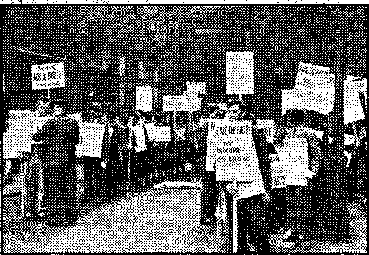Preparing for a big parade in London
Scene: London cab stand.
Taximan: What do you people mean by those .. two placards ?—“Religion is a snare and a racket.” “Serve God and Christ the King.” I can understand one by itself, or the other by itself; but I’m blessed if I can understand the two together. .
Witness: Who killed Jesus Christ?
' Taximan: Why, the scribes and Pharisees.
' Witness: That’s right — the religionists. Now who persecuted the disciples who preached Christ’s resurrection ?
Taximan: The same party.
.Witness: Right. And who did the persecut-- ing during the Dark Ages?
' ' Taximan: Why, the religious folk again.
-Witness: That’s right. Now who is behind ■ tlie Spanish affair ?
; Taximan: Why — oh, now I see what you ’ mean. Good luck! ,
' Scene : Piccadilly.
■,<A woman coming up to the parade said: > “I have read some of Judge Rutherford’s books and they tell the whole truth. Please give me a a banner so I can join with you.”
' : ->In nearly every case the people accepted the leaflets proffered them with thanks in that man.. per of English courtesy that is so pleasant to eficdunter. Many publishers reported’ that the people grasped their hands as well as the leaflets and assured them that they were coming. Few incidents of unpleasantness .occurred, and these, as was to be expected, came at the instigation of religionists. Several little boys, who were stopped from molesting paraders at whom they had been shooting with pea-shooters, admitted on questioning that they were told to do this (probably with the enforcement of threats of “purgktory” if they refused) by their Roman Catholic priest. In another case a “Protestant” clergyman told one of the- marchers that he would like to take a gun and shoot every one of those advertising the Kingdom of God that he, could. Thus the religionists showed the same spirit as their father the Devil.—John 8:44.
In all of this publicity work the newspapers were used scarcely at all, except, in a few cases where free write-ups would be given and advertisements accepted for a small fee. In view of this fact the enormous turn-out for the speech Sunday is quite a commentary on the small real usefulness of these agencies to the public, and the lack of importance that most thinking people assign to such perverters of the truth. It is also at once apparent from the tremendous audience that actually came to hear the lecture in London and al] over the world (besides the near 11,000 people that packed Royal Albert Hall and Kingdom Hall many more thousands were turned away in London alone) that Jehovah was not hampered by the lack of support of the newspapers. It seems appropriate at this point to furnish the copy that was given all
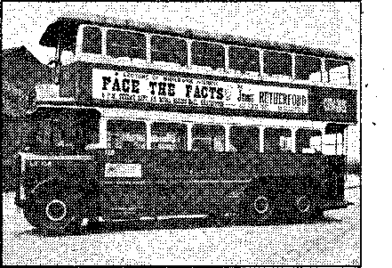These bus signs could be seen all over London.
reporters who came to Judge Rutherford for information, and which facts their papers one and all refused to publish. After reading how these same papers, supposedly the people’s chosen organ for giving them the truth, muffed this grand chance to render their subscribers a real service because they were led into a snare by the fear of man (the Roman Catholic Hierarchy, as they practically admitted) let each reader decide as to whom these “mighty” press agencies support. Is it God? Not unless you mean the god of this world. (2 Corinthians 4:4) The facts offered to all agencies who applied follow:
" The ' democracies of earth, and particularly Great Britain and America, are in great danger of Totalitarian rule. The Roman Catholic Hierarchy of Authority, the Fascists and Nazis, are conspiring together to gain control and rule all the nations by dictators. Although the newspapers know this fact they refuse to publish the truth concerning the same and so far as the press is concerned the people are kept in ignorance. The newspapers, therefore, indirectly support the conspiracy and are unfaithful to the people.
Centuries ago the Almighty God gave His word that in His due time and amidst great distress and perplexity in the world, exactly what we now
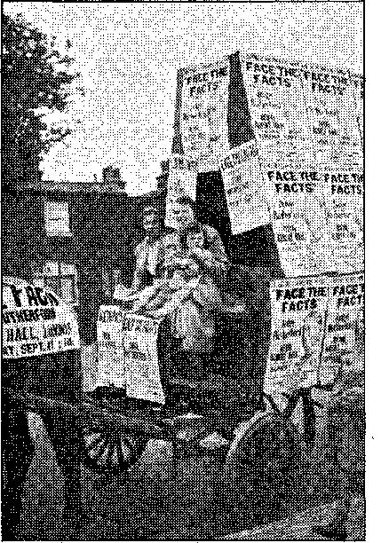The covered wagon. These Jonadabs did their part.
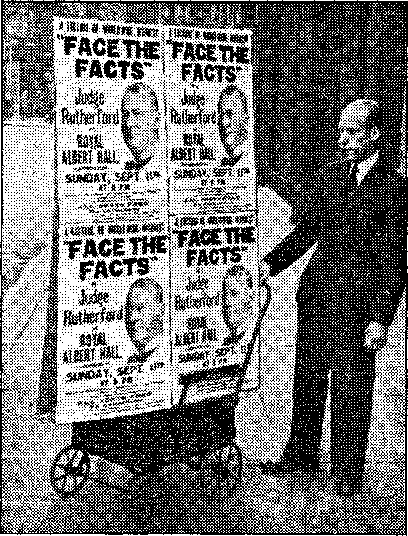ADVERTISE was the slogan. Anything that could be moved and would attract attention was used.
see, He would set up His righteous government with. Christ as King, and which will imle the nations in righteousness. That kingdom is now at hand and is the only hope of the nations and the people. It is of greatest importance to the people that they know about it, but the ■ newspapers refuse to publish anything about the Kingdom for fear of shocking the religious susceptibilities of the Roman Catholic Hierarchy and their allies. Such publication would interfere withsth'e religious racket. For centuries both Christians and religionists have prayed as Jesus taught, for the coming of God’s kingdom on earth, but only, the Christians have desired that kingdom. Religionists have an ambitious desire to rule the world in the place and stead of God and Christ. Religion is therefore a snare and a racket, and the Lord’s kingdom will do away with religion and all fraudulent schemes. The religio-political combine is against' the kingdom of God. t
It is the business of Jehovah’s witnesses to make known to the people God’s kingdom under Christ as their only hope. Because they do so those Christians are opposed and cruelly persecuted by the Roman Catholic Hierarchy and their Fascist and Nazi allies. Although the true facts have repeatedly been brought to the attention of the press the
newspapers decline to publish the truth and thus place themselves against God and His kingdom. Why should I waste time in giving interviews which would not be published? The public press has become at least a silent tool of the religious combine afore-mentioned. All are against God and against Christ and His kingdom and therefore against the interests of the people who desire to live. Having been warned they have taken their stand, against the Lord’s kingdom and must bear the consequences. ■
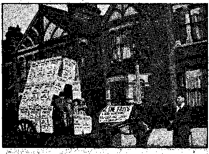People in the streets of London just had to look at this.
. Besides other forms of advertising promoted as above, American brethren were sent to.most of the population centers of the British Isles to encourage the publishers to put forth a strenuous; effort to widely circulate the news of the coining stupendous event. There was a wonderful'response to this exhortation to the witnesses to exert themselves to the full, and more details of the matter will be taken up in individual descriptions of the conventions in the relay cities. In London, by September 9, on which date the convention officially opened, the workers had reached a feverish degree of activity. It became plainer than ever before that the two broadcasts of Saturday and Sunday would be like nothing else that had ever been on earth. On the evening of the 9th, one day before the first of the broadcasts, the London convention was opened by the British Branch servant with an attendance at the first session of 1,140. The assembly then listened, with that rapt attention that only English audiences seem the most courteous in giving, to several Americans who brought greetings and encouragement, discoursing on the prophetic drama entitled “His War”. (See Watchtower magazine, issues of July 1 to August 15.)
After service announcements customary at conventions a “sandwich” parade was staged and then all went home to get to the night’s sleep early in order to engage in the house-to-house service the next day with the new bpoklet. Warning, just off the press and for the first time released to the public. The next day was a strenuous one. Phonographs, sound cars, witnesses in autos and on foot, plied the streets and homes and business houses of London, giving more and more advertising and literature and word-of-mouth testimony to this very much interested English metropolis. In this area alone more than 400,000 leaflets were distributed up to the time of the delivery of “Face the Facts”, at eight p.m. Sunday. The number of publishers reached a peak on Sunday, when more than 1,200 were in the field. In the two days more than 30,000 pieces of literature were placed in the hands of the people. (For a detailed report of the work of this assembly, see the final page of this issue.of The Messenger.}
Then, almost before they realized it, all of Jehovah’s witnesses in London, were seated in that most famous of all English auditoriums, Royal Albert Hall, waiting in hushed, enthralled silence for that epochal broadcast of Saturday, September 10, which is now history. The music was over and. Judge Rutherford was up and at the microphone! God has granted the judge the finest speaking voice in the. world for clarity and emphasis; and was that audience grateful to Jehovah for this provision! ‘What would be the great message that the Lord would deliver to the people this time through His chosen servant?’ .was the thought in every mind. Then in tones of the utmost harmony came that message more portentous than any other in modern times for the benefit of righteous creatures. To whom was this great message chiefly directed ? To the “great multitude” _ .described in the Bible as those “which no man could .number, . . ..clothed with white robes, and palms [of praise to the King Christ Jesus]. in their hands” (Revelation 7:9), those “other sheep” that Jesus described as having befriended His temple company (Matthew 25 : 3-2-40) and otherwise known as the “Jonadab” class (see Vindication, Book Three, page 7 7 on, for explanation of this title) ; the chief message was to this group, which composed more than half the audience! What was the breath-taking'message which they received? Briefly stated (and this statement should be taken as merely an appetizer, as there is no space in this description for that wealth of Scriptural proof so ably deduced by the Lord’s servant), they were told of God’s mandate to give them the responsibility, after the great destruction of the enemy at Armageddon, to marry and fill the earth with a righteous race. What a ftiandatej What an enthusing command from the Giver of all perfect gifts! This great reve-latipn has now been published, in the October 15 and November 1 issues of The 'Watchtower, and you may now read it and see the wonderful mandate is as true and sure as the mercies of J ehovah!
' The blessings of the righteous follow the destruction of all opposers, according to the divine purpose. In Saturday’s speech those blessings were detailed. For Sunday was reserved the great radiocast that the1 millions waited for with straining attention. Probably the demons and Satan, who has long known that he has but a short time, all listened in. Thus we may
it is in order to take the testimony of an eye witness. .
For the writer the.scene was indescribable! Here was the culmination of weeks of labor and preparation. Connected to the microphone on the brilliantly lighted platform from which Judge Rutherford would speak were wires and phones and ■ ether waves leading to other millions of people expectant to hear, and just as . tensely excited as those people in front who uttered no sound, only waited! Royal Albert Hall was honored to be the first by the fraction of a second to receive the message, from the King of Eternity! That vast audience it contained was equally honored, and they appreciated it. A scant three feet below the roses and
ferns of the speaker’s stage stretched out the solid phalanx of stall seats, with a quiet army of listeners; while above, circling like a colorful wall of humanity, the galleries on three succes-
have a limited comprehension of the invisible setting. For one to obtain a small conception of the" drama presented to the visible audience of 11,000 people jamming the Royal Albert Hall |
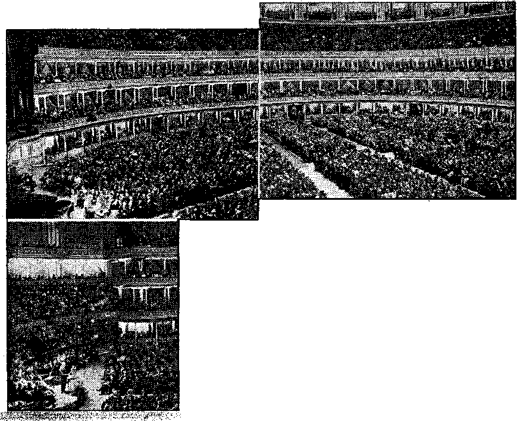Three views oi the Royal Albert Hall. It was packed out and several thousand had to be turned ( away from this thrilling meeting.
i®®
sive levels, and finally the uppermost corridor, spread before the eyes like an immense panorama. Along the top rail which surrounded the auditorium, topping the oval tiers like a crown, thousands thronged in the upper corridor, fortunate if they could see the arena from the guardrail. Here, almost-from the very eaves of the building, just below the roof, with every seat filled below, jutting heads peered down with fixed attention. on the platform below. A packed house, with thousands turned away! ’ . •
Then like the waves breaking on the shore came a roar of applause from that multitude for a real fighter! Then quiet. Judge Rutherford’s voice thundered in pleasing melody and no one wished to miss a syllable. What a stu-
pendous moment in the history of man! The Lord God, who is above all and over all, was telling the people through His chosen vessel that soon the oppressors of men would be annihilated by His mighty arm. Did the great Jehovah in this message specify who are His enemies, and the enemies of the righteous men on earth ? This was made absolutely plain. The Bible proof deduced was abundant that the chief among these enemies arb Satan and his invisible hordes whom God sentenced to death six thousand years ago. And who the visible enemies on earth? To learn the answer let each reader ask: Who is that adversary of God’s faithful witnesses that has maltreated, persecuted, imprisoned, and killed His servants in JSFew Jersey, Quebec, Mexico, Germany, Spain, Italy, and Rhodesia, to mention only a few of the places where their heinous acts have violated His covenant people? What is that organization parading under the name of Christ, whose chief representative, residing at Vatican City, claims to be the vicegerent of Christ, which organization, exactly contrary to God’s law, traffics and plays harlot with the commerce and politics of this world? of whom He says, "For, lo, I begin to bring evil on the city which is called by’’.my name”? What is the organization, abysmal haters of liberty, which, though once claiming God to be supreme, have now allied themselves to the Fascist-Nazi-radical group of Germany, Italy, Japan, and Spain; and thus as spiritual supergovernment over these totalitarian monstrosities to elevate the state above God, defaming His holy name and entrapping His witnesses who refuse to "heil” men or bow down to the. idols of men? What political power, masking its operations under a religious name, claims as its excuse for supporting the bloodj Franco in Spain that they ‘are fighting against Communism’, which is but another lie to camouflage the murder of their innocent followers in war-ravaged Spain; while^to ride every horse at once they secretly hold out their hands to Communism? What double-dealing criminals, whose record through the centuries is one of such unspeakable depravity that honest men must needs turn their eyes away from these bloody pages of torture of human creatures and of martyrs for Christ’s sake, now at this very day presume to tell the world through their Nazi-Fascist monstrosity what everyone shall say and publish, and how they, shall worship? Does anyone fail to identify the only organization under the sun capable of qualifying for such an inconceivable scope of vice, and which at the same time claims the name of God and Christ ? There is but one contender for this title of wickedness ; let the Roman Catholic Hierarchy have it all; no lesser criminal can make the grade.
Did Judge Rutherford make it plain as to what the Lord would do to the Roman Catholic Hierarchy who have blasphemed His name and.persecuted His people? He did. Blow by blow, proof by proof, the case against them was presented with so many Bible corroborations that, no doubt could remain even in the mind of the pope, if he believed in God, that destruction of the whole gang was imminent. This bunch'of religionists, whom the Lord hates, are to be destroyed by their erstwhile allies, namely, the radical element represented by the Nazi-Fascist-Communist combine, because God has decreed it so, even as Mount Seir (picturing the Catholic Hierarchy and other modernday religionists) was destroyed by her former allies, Ammon and Moab. In ringing denunciation of such irifamous hypocrisy the judge, at direction of Jehovah, who caused all Bible prophecy to be written for the comfort, and direction of His people on earth today, employed the tw,enty-third chapter of Matthew to identify the Hierarchy of Authority. What Jesus said of the Jewish clergy was to be applied by God with greater force against the Roman Catholic prelates. These words came like the death warrant which they' were in fact: ‘Woe unto you, Catholic Hierarchy, hypocrites! ye are like unto whited sepulchers, which indeed appear beautiful outward, but within are full of dead men’s bones, and of all uncleanness. Wherefore be ye witnesses unto yourselves, that ye are the children of them which killed the prophets. Ye serpents, ye generation of vipers! how can ye escape the damnation of hell?’1 One could not help thinking, as these words came from the mouth of the speaker, that the Lord Jesus, who is now directing the attack against the enemy, was repeating His blistering invective of 1900
, - , years ago, upon the Hierarchy, the modern coun-\ terpart of the scribes and Pharisees. '
’ . * Throughout the speech was interjected by
> vehement applause and many a “Hear! Hear I”, -*• ‘ that British expression of approbation. Two resolutions were proposed by the speaker in de’ " ’ nuneiation of the practices of the Hierarchy,
and of their allies, the Nazi-Fascist-Communist - ■ • group, and exhorting all lovers of righteousness
■ j to firmly declare themselves on the side of the King Christ Jesus, whose kingdom is the only hope of the world. To the first the audience - unanimously (as far as could be determined) shouted “Aye”, and to the second went up a mighty roar of “Amen”. When the judge had finished almost an hour of the greatest words of doom to the Devil, his Hierarchy, and the Nazi gang; and of the greatest words of abundant, comfort to God’s people and to those who were seeking Him, the speaker finished, and , the whole house rocked in applause. One could almost hear the echoes from the audiences all over the earth, too. Then announcement was made by an English representative that by writing in to the English or American branch of the Watch Tower a copy of the speech could be obtained. All was not completely over, however. >
Several weeks before the judge’s departure • for Europe word had come to him that the Roman Catholic Hierarchy was mobilizing its forces throughout the earth to break up the entire international convention by having disturbances at the Royal Albert Hall and also : at each of the fifty-odd relay cities. This infor
mation was transmitted to him by an employee of an American corporation. On the 11th of „ . August, at a conference held in a department ‘ of this establishment, all the conferees were stated to be Catholics; one present was a Jesuit priest. He gave the others present the informa. tion that the Catholics were keeping" tab on Rutherford. The language of the Jesuit priest as reported'follows:
That ‘Rutherford was going to have conventions all over the earth in September and that ' Jesuit priests were going to cover these conven-' tions together with police officers in civilian ' clothes, that there were to be speakers each day
- of the convention and that as soonjas one of
- them made just one word which was in any wfiy against the government then they would be arrested and tried on the charge of sedition and fomenting sedition. And that they were going to put the conventions into confusion and expose the Rutherford racket’.
These facts were presented in writing to. the commissioner of police, New Scotland Yard, London. The commissioner not only promised but actually gave very able protection which can but be remarked as in outstanding contrast to what might be expected from Australian, American, or Canadian officers of law and order. A facsimile of the letter in reply is here reproduced.
Address any reply to .
THE COMMISSIONER OF POLICE OF THE METROPOLIS, NEW SCOTLAND YARD, S.'W. 1 quoting:— 22/Unc/158 (A-2).
POSTAGE MUST BE PREPAID
. ' New Scotland Yard
London,
. S.W. 1
TELEPHONE WHITEHALL 1212
9th September, 1938.
Sir,
In reply to your letter of the 29th August, I am directed by the Commissioner of Police of the Metropolis to inform you that the necessary police arrangements will be made on Sunday, 11th September, in connection with the meeting to be held by your Society in the Royal Albert Hall.
. I am, Sir,
Your obedient Servant,
Assistant Commissioner.
The Watch Tower Bible and Tract Society,
34, Craven Terrace,
A day or two before the speech one witness had an unusual experience. A garage attendant, while washing up one of the cars on which was a banner advertising the lecture “Face the Facts”, asked the witness if he were going to attend. When the answer was received in the affirmative the garage man volunteered: “I’m not. I’m afraid to.” He further explained: “It is being whispered about London that the Black-1 shirts [British Fascists led by Oswald Mosley and now organized as British Union] will be there.. They have got the word around by their underground system that they are going to bust up the meeting.’! Tfie witness took this information to the office.
Scotland Yard was told of this further development. The officer in charge was evidently not afraid of the Hierarchy; for his reply was prompt and to tfiis effect: “Don’t worry. I already know some of those Blackshirters.' But
wre’ll take care of them no matter what kind of shirts they wear.”
With this explanation let us now return to the Albert Hall, where Judge Rutherford has returned to the microphone although the hour’s broadcast is completed. As might have been expected, some of the Devil’s and Hierarchy’s Nazi element were present, though afraid to make much of a stir on account of the. Yard; and a few rather faint "Boos” came from several places in the upper galleries. The judge asked them why they didn’t get out if they did not like the speech; they hadn’t rented the hall. Then the crowd cheered and drowned out, the radicals. Meanwhile a woman had wandered, down to the end of the center aisle only three feet below and perhaps a half-dozen feet in front of the judge. Those of us who were on the platform had observed her before, noticing that her eyes were blurred and bloodshot like a person drunk, drugged, or demonized; also an usher had seen her and already requested her to leave. Suddenly as if by signal she raised her hand and said something that sounded like "I want to speak”. At this time, though a minute or so after nine, some of the stations had not cut off in America and elsewhere and many listeners heard the judge say, "Take that woman out.” Two ushers took the woman by the arm, and the police at the door assisted in her ejection. A few "Boos”, shouts, and calls came from some of the pope’s hirelings as she was removed, and the woman, in a manner" which is not good cricket, tried to hit the ushers, but that was all there was to it. And out she went. Ten witnesses were not more than ten feet away from her when she tried to speak to the judge, but not one of us heard what a correspondent of the London Daily Herald next day reported her as saying: "What good is it preaching about Christ to me. I haven’t enough to eat.” But if she did say that it was no doubt at the instigation of some of the Devil’s agencies. There was no prospect of food on the platfomt After hearing this great broadcast all that was suggested to the density of the same reporter’s skull was: "If I wanted “to phone America it would cost £3 for three minutes.” Is it any wonder that the Lord will destroy all such, ilk?
The garbled misrepresentation that appeared in the Evening Standard (London) manifested similar illicit relationship, or, to use the Scriptural metaphor, "fornication,” with the Hierarchy. But to return to the above report by the Daily Herald: The letter of one outraged subscriber, who heard the judge on this occasion for the first time, is here reproduced, together, with two paragraphs to the same editor by an eminent journalist.
Letter by a New Jonadab
To the Editor of the "Daily Herald”.
Sir, • . -
Your distorted account of the meeting of 10,000 people at the Albert Hall to hear Judge Rutherford last night has filled me with disgust. I wonder how many of the 10,000 and of the great number in the "ten halls in different parts of this country” read the Daily Herald this morning? How many, like myself, were shocked to see that the Daily Herald had failed to keep its promise and boast to tell the truth, "seeking neither to ignore what is cheerful nor to hide what is unpleasant,” thereby keeping confidence with its readers? (Daily Herald July 14, 1938)
' You admit that yours is a serious responsibility, that you are the eyes and ears of your readers, that it is your duty to see truly and report faith
. FULLY,— ,
Then why have you failed to do so today upon a matter of vital importance to those readers who were not at the Albert Hall to see with their own eyes, and hear with their own ears? '
Please prove that Judge Rutherford "prophesied the same thing about the Great War” as you state, and also that he "is still forecasting the end of the world”. Shall those 10,000 who were at the Albert Hall, knowing the truth, keep silent? Not likely!—we value the truth too highly for that.
Until this week-end I had never seen Judge . Rutherford, but I had read his books (which you do not appear to have done) and I know him to be the bravest and most God-fearing man on earth today.
You have not given an honest account of the greatest convention of Jehovah God’s witnesses and their companions ever held—rather you have sought to belittle it. •
Shall we accept your report of the world’s affairs in general, the true information of which we really need in these days?
Daily Herald, you have betrayed your readers’ confidence! Maybe you have done yourself serious injury, as did the snake in the blacksmith’s shop.
From today I shall cease to be a regular reader of the Daily Herald.
[Signed] O. S. M. Brown
Since a disparaging reference is made in the report to the financing of the Judge’s broadcast, it may interest you to know the facts. The cost of ■ that great effort has been defrayed by the free-will contributions of those, who appreciate Judge Ruth-erf ord’s work in pointing out to the people the only way of safety now open to them before Armageddon, and who, like the Judge, count everything, even earthly life itself, of secondary importance to their obedience to Almighty God in giving warning to the people of the impending “Battle of the Great Day of God Almighty.”
As a sample of garbled newspaper journalism, the account you publish ranks high, but as a statement of fact it is discreditable to straightforward English journalism, and I make that observation as a London journalist of. many years’ experience.
One other untoward incident was observed and reported later by one of the press bureau of the London division of Jehovah’s witnesses. After recounting several incidents of people at the hall who were overjoyed at the wonderful lecture, which items will be presented to the reader later, his story relates: “And now for an incident of another kind. A Roman Catholic interloper in the gallery at the Royal Albert Hall, when restrained, exclaimed, ‘Why can’t I oppose ?’ He was told that he lived in a democratic country and that if he behaved like a British citizen and stopped his ill-mannered shouts he would save himself being locked up in a prison cell. He did not cease. Consequently, though still struggling violently even in the hands of stewards, who took the pressure off one seat in the auditorium, and uttering oaths, such as only the dupes and tools of the Hierarchy can, he was carried away bodily and deposited on the pavement outside. Here he was' severely cautioned by one of the . Albert Hall official stewards who act as police officers.” . Completing his impromptu remarks the judge stated simply: “My only purpose in addressing you is to give warning. If you choose to stand with the Devil’s crowd, then you die. If you choose to stand on the side of Jehovah and His King, you will live.” Then the meeting was' over, without any how of further trouble, and the police were on duty at the judge’s car, and also a Black Maria, or patrol wagon, was seen to be ready to carry away any disturbers. How different from the manner in which the American police have upheld such unsavory gangsters as Al Capone and a certain Catholic mayor of Jersey City, while at the same time they set upon, beat, imprisoned, and tormented Christian men and women, as witnessed in Lagrange and Griffin, Georgia, and many parts of Florida, New Jersey, Pennsylvania, Illinois, Connecticut, and many other places. During the writer’s stay in England he found much commendable in the English and Scottish police.
As has been observed above, due, no doubt, in part to' the fine co-operation, of Scotland Yard, the big threat of the Jesuits failed in the British Isles. But this very conspiracy of the Hierarchy’s secret police was, very likely, responsible for the widespread disturbances which occurred in the United States. When reading the descriptions of the fights the “old whore” (Scriptural name for the Roman Catholic Hierarchy) put up in America to stop the exposure of her racket in that country, bear in mind the plot which was disclosed by a witness, to the cabal in the American corporation plant above mentioned.
How were these great broadcasts received throughout the world? Space does "not permit the printing of the hundreds of cables received in London. But some from all parts of the world are reproduced to show the universally splendid reception:
America. Pittsburgh: “Engineers state best overseas reception ever. Audience 1800 thrilled Jehovah’s mandate. Keenly anticipating tomorrow. Love.”
Omaha: “One thousand thrilled. Reception excellent. Jehovah bless you.” ■
Brooklyn Office: “Magnificent service all auditoriums.”
Cleveland: “Jehovah’s word and name magnified. Convention and local radio reception excellent. Seven thousand attending heard swift kick SOTB. Emerods painful.”
Canada. Ottawa: “Saturday reception perfect. All thrilled with message. Many French Jonadabs present who. were Catholics a year ago. Interpreter busy translating for French brethren. We rejoice at the glorious prospects for Jonadabs. Anticipating a grand witness Sunday.” / . • .
Toronto: “Jehovah’s witnesses and companions at the close of the international convention at Toronto say we are with you wholeheartedly in the fight. We express our love for you. To all you have said we say Amen.”
Winnipeg: “Inspiring message. ‘Face the Facts’ perfectly clear and enthusiastically endorsed. Four thousand -present.” ' '
Calgary: “One thousand thrilled. Good reception. It shall go forth. God’s power manifested. Deadliest wallop ever delivered.”
Vancouver: “Auditorium packed; reception perfect; Jehovah buildeth the house.”
Cablegrams and telegrams to London show that the cities and towns in nearly every part of North America heard Jehovah’s warning, either by radio or in the many relay auditoriums. Even Port-of-Spain, Trinidad, in South America, reported hundreds of listeners. Continuing this check-up around the earth, what do we hear from the great continent of Australia, south of the equator? At this time, when England and America 'were enjoying Indian summer, on the other side of the earth, Australia’s spring was just commencing; but neither dis- . tance nor climate marred the crystal resonance of that message; it was as if the judge were speaking to them in person as he did six months ago. Listen to this typical message from one of the eight great cities that reported: “To fearless exposure Devil’s religio-political-Roman Catholic - Total itarian - Fascist - combine racket crowded hall say Amen. Perfect reception.” (Melbourne)
Close to, the antipodes of Britain lies New Zealand, named by the Dutch explorer Tasman, who might have been homesick for the Zuider Zee. With a climate much like England’s, and a population ninety percent descendants of Scotch and English, this country so famous for woolens, native Maoris, tree x ferns, South Polar expeditions, and magnificence of forests and mountain scenery, received Sunday’s broadcast early Monday morning in spring. Reports both of clarion distinctness in reception and of unparalleled enthusiasm came in from large audiences at Auckland and Wellington.
What of the islands of the sea? Tasmania, green and fertile island of the Southern Hemisphere, south even of Australia and separated from the smallest continent by the tempestuous Tasman sea, cabled through the Launceston assembly: “Tasmanian witnesses send greetings. Speeches heard clearly. Wholehearted support your exposure of enemy.” .
Traveling with the sun in this survey of the earth’s listeners we have next selected a cable from the Orient, from Singapore, once port of call of pirates of all nations, and even now a name suggestive of salty villainy and tropic adventure. Only about five degrees north of the equator, the hot sun did not deflect the radiocast: “Thrilling message perfectly received.”
India, whose teeming millions have long been used to the exploitation of “Christen-,dom”; whose idolatry at least does not claim to be sponsored by the Prince of Peace; land of cashmere, elephants, mountain passes, poisonous jungles, and of those twin specters, poverty and oppression; of this vast British colony, Bombay and Lahore cabled: “Perfect transmission.” .
Jehovah commanded and used the ether waves' to carry His great utterance. Nor could the Totalitarian monstrosities in Italy and Germany interfere one whit. So it may be said that thousands heard in these wretched, despotic coum tries; but the gag on free use of all methods of communication makes the number difficult to calculate. As has been remarked before, it is certain that Vatican City heard Jehovah’s sentence. Other cables came from Switzerland, Holland, Norway, Sweden, and Finland. Continental Europe was undoubtedly deluged with - the great announcement of the purpqses of the
Lord. And so back to the British Isles. An ac-~ count of the events in the various convention cities there will be considered separately.
Before passing from the London convention it should be remarked that there were many other interesting events on the program for the Lord’s people. There was immersion of 125, whose ages' ranged from nine to seventy. Of great interest also were the discourses by the servants of the Central European, Northern European and South African branches and by several English brethren. One of these speakers summed up the German situation in these words: “The testimony of these faithful German brethren written before God in tears, sweat and blood, means more than ink.”
Worthy of observation are a few more incidents that occurred at Royal Albert Hall and at other places in connection with the great witness work. It is well to remember that this great hall is situated in the center of London’s fashion mart, the core of much of its tradition, while it overlooks the two great lungs of London, Hyde Park and Kensington Gardens. It is also remarkable that superb weather continued for several weeks before and after the broadcast. When the weather is fine in England it is indeed exhilarating.
At the lecture: Two parsons and a colored gentleman, who had just listened to “Face the Facts”, called an usher and asked for a copy, of the new booklet Warning. They contributed 6d each for the publication and said they were
in full harmony with what the judge had just said: “Ne are against this religious racket; we are on the side of Christ.” The usher who had been eyeing their clerical garb responded: “You are not; the clothes you are wearing identify you as religionists.” They then asked: “How do we get out of it ?” To which the usher quickly answered: “You can’t traffic with the Devil’s organized religion and serve the Lord at the same time. You have got to clear out of this before you can receive the Lord’s protection under His organization. Serve God and'live, or remain. with Satan, and die.” Their final words were: “Then we will get out of Satan’s organization.”
An Austrian, who had lost all his possessions as a result of the Nazi misrule in that unfortunate land, and had seen the wicked tortures to which the freedom-lovers there are subjected, corroborated the words in the speech as he de-parted'from the hall: “Judge Rutherford is absolutely true in what he says. It is a great pity there are not more public men like him to proclaim the truth about these wicked totalitarian governments. Public men today are so seldom interested, in public weal.”
' In a park outside the Albert Hall a police officer approached some pioneers and asked them: “Why don’t you broadcast these lectures over radio ?” Reply: “Because the British Broadcasting Company have cold feet.” The policeman added, “We chaps never get a chance to hear about these things”; whereupon the pioneers informed him that, on application to the Watch Tower office in London, arrangements would be made to play the records of these speeches on a phonograph in his own home. He took the address and went away rejoicing that he could get the good news in this way.
Three ladies from Singapore found the Albert Hall packed out and no seats available. Determined to hear, they had someone direct them to Kingdom Hall, where an overflow audience was supplied with a loudspeaker from the Albert Hall; their persistence was rewarded by the Lord, «as they not only heard the great message but discovered that this location was only a few steps from their own hotel.
During the lecture a representative of the * London Bethel felt a punch in .the back and an importunate whisper, “What’s a Jonadab? I have to go home at once to my baby, but what’s a Jonadab?” The witness was trying to hear every word of the talk, and briefly advised the woman to hear on. After fifteen minutes of silence came the same punch and whisper, “What’s a Jonadab? It’s feeding time for my baby and I’ve got to go. But I can’t wait to find out what is a Jonadab.” She took away a partial answer that it was a person of good will, one of the “sheep” described by Jesus in Matthew 25:32-40. (For full explanation see Vindication, Book Three, page 77 on. ‘The Jonadab class’ is a term synonymous with ‘the great multitude’ of Revelation 7:9.)
My First Convention; a London Jonadab
“My introduction to Jehovah’s witnesses came about a month ago, when a young man called at my home with a phonograph and an invitation to a lecture entitled ‘Face the Facts’. I was ready for him. By that I mean I was in a frantic state of perplexity. For a good many years I had been worrying about the woes and wickedness of the world. I could not find in the wisdom of men any vestige of satisfactory explanation of the present, or hope of the future. At times I was acutely wretched.
“Then a few days ago I read some of the Watch Tower publications. I was amazed! How simple they made the Scriptures appear! The witness of Jehovah who called on me was in convention mood. I caught the spirit and was in the field the next day. The peace of mind, the joy of service;—in the streets with the bills I went, door to door with an eagerness that leaves me spellbound as I look back on it! . . . ”
‘“Face the Facts’ is my first milestone. How many I shall travel I know not, but if they be greater than this, they will pass human understanding.”
Advertising the Kingdom
A keeper of a butcher shop had observed a “sandwich” parade in his neighborhood, and as it broke up he singled out one parader with her sign rolled up under her arm and asked for more information. When this was explained he cried, “Oh, I have heard of Judge Rutherford and I should like a share in this work. Give me the bill,” pointing to the placard under her arm, “and I’ll hang it in my shop window.”
One local cinema manager, who was approached to show a slide advertising the convention, asked, “Are you associated with this street advertising?” When he received the reply in the affirmative he stated: “Well, I thought I was a Christian, but when I see the zeal of
The donkey barrow. The little girl’s advertising, too.
all you people it shames me. I feel I should like to do something for Jehovah, an'd I will show a slide every day until the lecture, free of charge.” Hundreds of theaters in the British Isles did likewise, and one who accorded this courtesy commented: “It is about time somebody showed up the hypocrisy in the churches.”
We are glad to repeat that the bobbies are not like the lawbreakers who wear brass buttons in America.^A party of pioneers in Northeast London was about to distribute leaflets advertising the Albert Hall meeting, when a police officer appeared on the. scene and volunteered to point out to them the best positions in the neighborhood in which to pass out the invitations. He approved the work and assured the group that he intended to hear Judge Rutherford at all costs. Due in part to his assistance an enormous number of announcements wero "given out in about an hour.
A sound car was busy heralding the lecture “Face the Facts”. A pedestrian approached and questioned the driver, “What is all this about?”.He was briefly informed, and, like many in Jesus’ day, stood astonished at the doctrine. “I am going to hear Judge Rutherford,” he said, “and if you will give me a handful of those bills I will distribute them.” . _
An amazing spectacle was to be seen coming along the edge of the street. About sixty of Jehovah’s witnesses strung out in line, interspersed with three sound cars, were exhibiting banners and posters of “Face v the Facts”. Suddenly a man detached himself from the crowd of onlookers, and, buttonholing one of the paraders, asked in bated breath, “Is Judge Rutherford personally in London?” The reply being “Yes”, he continued, “I’ve heard him twice in America, and I’ll hear him this time. Count on my being there.”
Not all Catholics want to kill everybody who does not agree with them. A discussion took place in a large London business house between one of Jehovah’s witnesses and the manager, a Catholic. In answering the witness’ request the manager responded, “So you want to get away early tonight, Mr.------“Yes, we have
a big convention ip London, using the Kings-way and the Royal Albert Hall for three days.” Manager, reflectively: “Well, I am glad to hear
' it. It’s a great pity there are not more with the same spirit as you people. The world needs ' these conventions. Imagine a country like England allowing the Godless League here.” Wit" ’nes’s: “Yes, that is so. They seem to get more ’ ' . virulent, too.” Manager, thoughtfully: “It’s very , ■,alarming! Well, I wish you a happy time, Mr.
' . ■. '. . . .
“The Lord gave the word; great was the . ,' ^company of those that published it.” “And the
Spirit and the bride say, Come. And let him . '.'.that heareth say, Come. And. let him that is ■ ' ■ athirst come: and whosoever will, let him take -. , the water of life freely.”—Psalm 68:11; Rev’ elation 22:17. i
< \A • .-,S • / -- ■ Belfast ■.
. Belfast, chief commercial and manufacturing city of Ireland, and Irish linen center of the ' 'world, though built partly on the low banks ; of the river Lagan, is surrounded by beautiful . hills, which overlook the expansive arm of the / -sea 'called the Belfast Lough. Its population . is considerably more than half a million and - composed of a mixture of Protestants of the ’ '■ “Orangemen” order and Roman Catholics, vio
lently. opposed to each other. This antipathy, . which has had expression in throwing bombs ' - at political statues and burning. churches, at , - present’ is rather quiet because of the activity . bf the Royal Ulster Police; to whom are often delegated extraordinary power by the minister ’ of home affairs by virtue of the authority of the Emergency Powers Act. The people can . thus be regimented at will by a few men at the top. • ■
■ • , This gives a little background of the con-•vention of Jehovah’s witnesses there. RepreSentatives came from such towns of Irish name . as Coleraine, Cookstown, Enniskillen, Dublin - -.(Eire), Fivemiletown, Lisburn, Newtownards,
' King’s Hall, Belfast. 2,500 heard the lecture here.
Portadown, Portstewart, Poyntzpass, and Tempo, all joyously ready to advertise the King.. The Society booked the largest and best-appointed theater in the city for the public meeting, but permission had to be granted by the police to open the building on Sunday, and although the owner asked also, this “could not be acceded to”. Religious opposition was likely at the back of this, but the enemies should realize that they cannot successfully fight against the Lord; a day later the Society engaged the largest auditorium in North Ireland, the new and finely' constructed King’s Hall.
In the two weeks before the convention the band of witnesses spread 88,000 leaflet invitations tp hear “Face the Facts” ; 400 placards were, exhibited in shop windows or by householder's;'65 banners wefe put on hous'es and hoardings, including some displays as large as 27 feet long; 20 cinemas exhibited slides; while 25 “sandwich” parades were held through the principal streets of the city. Part of this work was done during Civic Week in Belfast, when crowds thronged the sidewalks. Besides this, advertisements were carried by the Belfast Telegraph (with circulation of 100,000), including many free news items. They advertised the immersion so well that many of the public attended and asked permission to witness the event. At the Belfast Waterworks pool 22 were immersed, among- whom were a clergyman’s wife and a former Dublin Catholic.
For the public address there was a turn-6ut of nearly three thousand people, and the witnesses were delighted at this indication of the Lord’s, blessing on their efforts, and they placed hundreds of Warning booklets. All went home strengthened for further service.
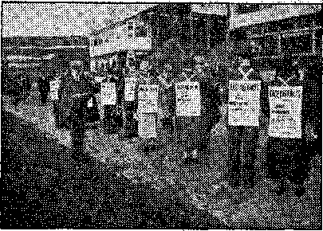- “Sandwich sign” parading throughout the shipyards, Belfast.
Birmingham
■ This great manufacturing center of more than* a million people had a splendid convention. Field service, “sandwich sign” parades and folder distribution went forward with that saving which is peculiar to all the conventions of Jehovah’s witnesses. On the opening night of the convention about a hundred friends were given discourses on “His War”, .as was also done in the other convention cities; on Saturday morning came field service, the house-to-house service with the Warning booklet, which was the convention release everywhere. Saturday night came the wonderful lecture broadcast over the earth especially for the Jonadabs, our “companions”. Sunday morning 420 brethren were in the field. On the same morning 18 symbolized consecration by immersion, one a young man w’ho had just spent three years at a university with the object of becoming a clergyman.
Advertising was accomplished by the means outlined in the other relay cities; and, in addition, three hundred posters were displayed on hoardings (the American term is billboard), while two hundred buses carried notices of the lecture on their windows and fifteen cinemas showed slides. All conventioners were advised to write to friends or those known to be in
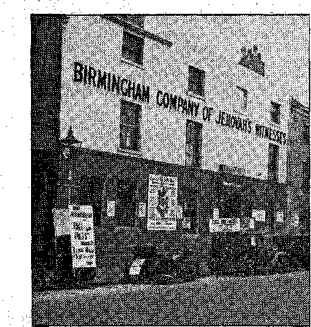Headquarters of the Birmingham company of , Jehovah’s witnesses
terested and invite' them to the lectures; in Birmingham 1,000 of these letters were sent out.
With such a mass of advertising it is not surprising that the 2,500 seats in the Town Hall were quickly filled; then four large buses plied between this auditorium and Kingdom Hall, which was used for the overflow. Fifteen hundred booklets were placed at the meeting.
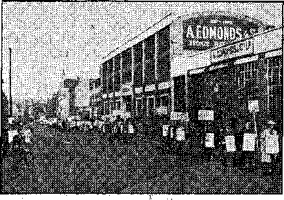Birmingham conventioners starting off on a parade
One brother, while making announcements advertising the lecture and referring to Totalitarian governments, from a microphone on sound car, said, “A hideous monstrosity is rapidly approaching . . . ,” when he looked out of the car window for a moment and saw a nun coming towards him, duly bedecked with wings, trappings and other ecclesiastical crow’s feathers. He felt greatly tempted but refrained from commenting.
z Bristol
Bristol, situated a few miles from the crotch of channel formed by the Severn river as it empties into the sea along the southern shpre of Wales, has been noted for shipping since it received its first charter from Henry II, in 1172. Now a city of roughly half a million, it is a,great manufacturing center as 'well as port; its residential attractions include,, the charming scenery of Clifton and Durdham Downs. .
This city was the meeting place of the West country; thirty-six companies of Jehovah’s witnesses were invited to participate there. They brought great enthusiasm to the work of advertising the convention and the lecture “Face the Facts”., Besides distributing 200,000 handbills. and 800 window .cards, unusual display
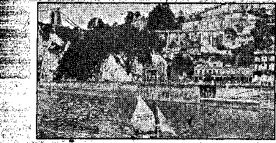Bristol sound boat advertising “Face the Facts’’
. . was' adopted. A sailboat with large banners ’ ' sewed to the sails, and equipped with sound
' apparatus, plied up and down the beautiful
* Avon, which Hows through the center of Bristol, and gave announcements of “Face the Facts” and gracefully displayed these words before the , people’s eyes. The hoardings attached to the regional servant’s car could not be carried on the five main bridges: the officials who refused permission for this stated, “You don’t need . any extra advertising, we see 'Face the Facts’ everywhere.” On the river bank; a 24-foot ban-, ner was displayed by the courtesy of the rail-■ way company whose track runs alongside. These features of advertising were a real witness to the continuous stream of sight-seers to the Suspension Bridge which spans the famous Clifton Gorge, a beauty spot known, nationally.
On Sunday evening 2,500 people overflowed the Regent Theatre and hundreds were turned away consoled, by a free copy of Uncovered with a slip attached which entitled them to a free copy of Face the Facts when printed. It is a . pity there is not more space to relate the activi-’ ties of the children, those who will form a part of the nucleus for repopulating the earth with a righteous race, both in Bristol and elsewhere. Listen tojhis evidence of a bright, young mind. As a Bristol “sandwich” parade came near a main railway terminus a taxi driver hailed , them with the question: “Your two signs are contradictory: you say 'Religion is a racket’ on ' one and 'Serve God and Christ’ on the other; how do you explain that?” A little tongue ' quickly spoke up: “The heathens practice a 77 religion by worshiping idols; you wouldn’t call
7 that Christianity, would you ?” The man was i.' ' sb impressed that he took the Warning booklet ' from her and was later seen at the Regent to , hear ihe broadcast.
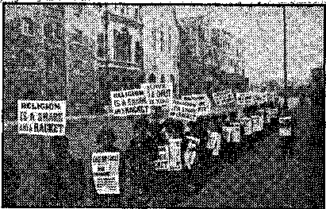“Sandwich sign” parade in Bristol
Glasgow
Glasgow, greatest city in Scotland, and second only to London in the British Isles, approaches one million and a half in population. Scotland! romantic synonym for valor known to every schoolboy; once the begetting place of , opponents of “papists” and “popery” ; now the residing place of emasculated “Protestants” and a fast-encroaching Catholic-control group. The writer met one of the once vigorous Scotch Presbyterian clergymen. In a garb similar to that of a priest he appeared pale and listless before the warning of imminent destruction at the hands of the Hierarchy. How inconceivable that he was a countryman of the doughty Bruce • or the valiant Wallace! ’ ■
All Scotland joined in the great assembly at Glasgow; Aberdeen, Inverness, Dundee,. Ayr, Kilmalcolm and Edinburgh were some of the places represented. Never had this city received such a deluge of advertising; with great vigor and dispatch the friends went at it, and here again special features were used in advertising besides the means used in other convention'' cities. A number of posters were -put together in ark style which the police prohibited from being rolled through the streets on hired barrows; but not to be outdone, the brethren put handles on them and carried them like the ark of the covenant! A tremendous double window next to the meeting hall was secured for two 7-foot square displays of “FacAthe Facts” by the promise to keep the vacant room behind clean. Besides this, 300,000 leaflets, 800 placards, streamers over the three main bridges, buses, billboards, and cinemas did their work of informing Scotland, this being especially true since the Glasgow exposition was then ex- -
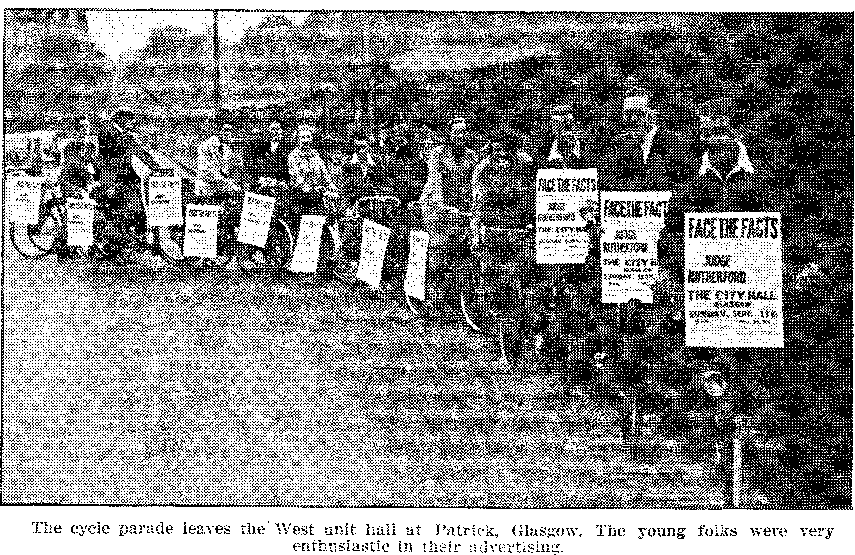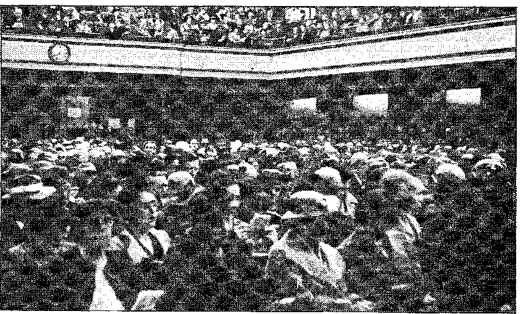The results of the labors of the publishers. City Hall in Glasgow filled well before the advertised
time. The clock shows 7:30. The lecture began at 8 p.m., Glasgow time.
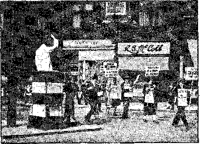“Lhe Bobby” holds up traffic for the sign parade in Glasgow. . ,
hibiting. The talent that is found so conspicuously among the Scottish brethren, and their shrewd intelligence coupled with kind good will, all contributed to the success of the convention.
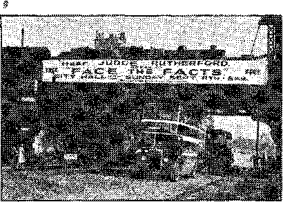One o£ the street signs in Glasgow. You can’t miss it.
Several hours before the stirring broadcast “Face the Facts” came to the City Grand Hall, which had been secured for the occasion, one woman waiting at the door was heard to remark: “One has to be early wheip coming to hear Judge Rutherford, or else it means being shut out; and I do want to hear him.” Before eight o’clock- 3,000 people packed this and two adjacent halls; of the many who were turned away 188 received Uncovered booklets; while to the audience nearly two thousand Warning booklets were given free. Truly a great convention, and it is certain that those who participated were refreshed and stimulated.
Leeds, city of half a million in England’s famous Yorkshire, was the assembly place for the units of Hull, Grimsby, York and other places in this vicinity. Enthusiasm here ran riot! If there was anything left undone in Leeds to attract attention for the talk “Face the Facts” no doubt if it is suggested to those Yorkshiremen it will be done next time. They remembered that the battle is God’s; they did not know just how many more whacks they would get at the enemy and they swarmed with multitudinous array of advertisements, advancing like the mighty pikemen and. long-bowmen ■who fought more anciently on this field. “In fact, it seemed almost as though this was going to be the final witness, so united were the brethren,” says the report. Double-decker buses and tramcars carried large banners stretching from end to end; while hundreds of shop windows in the busiest thoroughfares displayed invitations to come to the Majestic Cinema for enlightenment on world problems in “Face the Facts”; all the twenty-four cinemas showed slides inviting the public. It must have been hard for the newspapers to hide in their holes, ’which they did, and appear oblivious to such a triumphant fanfare! They ignored the natural interest of their readers, and, true to their agreement with the Hierarchy, they were as silent as the tomb; they appear not even to know that they are already as good as dead! The police, too, seemed to have lined up with the Roman power and made an ineffectual effort to stop the sound cars.
Everything worked together for a splendid public meeting. Audiences approaching four thousand crowded two buildings and many wrere turned away, always, of course, with an Uncovered booklet. All thrilled to the great message, especially the words, in substance, “The Kingdom is not a thing to be contemplated; it is here,” and the denunciation of the Hierarchy, International Murderers, Limited.
The conventioners had enjoyed great privileges and blessings from Jehovah.
Third in size in England, Liverpool has long been an outstanding port; it is situated three miles from the sea and extends for several miles along the river Mersey, in the northwest sector of the country. Easily accessible
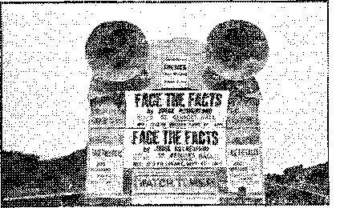House-car and sound car in Liverpool. You could hear it and see it.
to Ireland, it has become the residing place of many Irish Catholics, who, kept in ignorance and impoverished by the avarice of Rome, occupy vast slum areas close in to the city; here religious riots are not infrequent. However, no disturbance came from these quarters during the convention, and it must be surmised that many of these Catholics either heard the lecture or received literature during the intensive two-day campaign. During the lecture alone 2,181 pieces of literature were contributed for and 561 people left their names requesting calls from Jehovah’s witnesses.
To advertise this talk the “sandwich” parade was used effectively here as elsewhere. The people stared. “x4ye, and not only that, but they had their comments to make as well,” generally quite friendly. However, one choleric and probably Catholic clout shouted some abusive language at the paraders ; another bystander, noting this umnannerliness, asked, “'What’s the matter with that parasite?” A large sound car with large-size posters did good work of advertising, especially catching the crowds after football matches.
The lecture was received at both the St. George’s Hall and the Concert Hall, whose joint capacity, just under 4,000, was packed out Perhaps another 2,000 people were turned away; for, as was the custom in all the convention centers, Uncovered booklets were distributed among those who could not be accommodated, and the number reached with these exceeded 1,000. This was a large audience, for England, to hear a message by the public-address system, and is a credit to the energy and activity of the Liverpool witnesses.
The size and close proximity of English cities is noteworthy to an American. Manchester, whose population, including Salford, is approximately 1,000,000, is located only 30 miles from Liverpool, 30 miles from Leeds, 50-odd miles from Sheffield, and 80 from Birmingham. It is a manufacturing center and the hub of the cotton trade. Another convention w’as held in this densely populated area. The witnesses from Sheffield, and some from near-by suburbs, swelled the ranks of the residents.
At least one unusual feature of advertising was utilized in Manchester that has not been previously discussed. It is customary in England for newsboys to display three-foot square posters with what we in America call “scareheads”, large-letter headlines of the day’s news. In many convention cities, especially Manchester and Leeds, these news agencies placed the notices of “Face the Facts” among these news ’ advertisements; which proved a very effective means of presenting the invitation to the public. These various methods of advertising are described in such detail that the reader may ap-,, preciate the ingenuity and tireless energy that went into the preparations for the public meeting in each place, to show that the vast audiences were not accidental, but the blessing of the Lord bestowed upon hard work in His name, and also as a record for future use.
Jehovah’s rich favor was upon the Manchester convention. The Gauifiont Theatre, capacity ’2,600, which had been among the 24 cinemas that had carried slides of the broadcast, was selected for the epochal “Face the Facts”. There was a queue of people, 600 persons, six deep, an hour before the beginning of the broadcast, and the great overflow was repeated here as in other cities.
Interesting item: It was found that a dismal-looking building before which a sound car had been making announcements was a church, and one of the occupants related as he came out that every word carried quite clearly even to the pulpit.
Newcastle-on-Tyne, the great coal-mining town, has suffered from unemployment w’oes, considerably more so than in the south of England; and in many instances the cruel Means Test has deprived workers of all their belongings. The convention, bringing with it enlight-
enment on God’s Kingdom;, was welcome to the people generally. The companies of northeast England up to the Scottish border assembled here. Though these workers were beset by torrential rains a few days before, just before the broadcast, because the great God of the universe had decreed that the elements should hold back until His message had been delivered, the weather turned fine. The newspapers carefully concealed their editors in holes when approached by conventioners with news items concerning the speech "Face the Facts’-’, which would be of natural interest to the people of the town. They were not even met with a frank refusal,-but with evasive procrastination. Finally, when the Haymarket Cinema and tl^ near-by assembly hall were both packed out with nearly 3,000 people, up to which time the newspapers aided not a bit towards the advertising, a fat reporter from the North Mail was crowded in, no doubt taking up space that could have been occupied by less flabby and more intelligent flesh. The half-inch paragraph which followed in the paper did not save the face of the editors in the eyes of readers who could see "Face the Facts” in every nook ahd corner in Newcastle, but which the newspapers could not see, ‘of which they were willingly ignorant.’
The police here, which was almost universally true of the entire United Kingdom, co-operated in that manner’ which might be expected towards the ambassadors of Christ. They assisted the "sandwich” parades, which, of course, contributed to the tabulated placement of about 3,500 books and booklets. These parades were note-worthy in that four persons, who had never engaged in the service, came up to the line of marchers and requested posters that they too might participate. The follow-up work is going forward in Newcastle in great bounds.
Sw-ansea, located on the right bank of the Tawe river, at its mouth, in an indentation of the Bristol channel called Swansea Bay, is an important seaport on the southern shores of Wales. The staple industry is the smelting of ores, for w-hich coal and some of the other minerals are mined close by. The inhabitants of this town, and most of Wales, -are largely of Celtic origin, descendants of the early Britons, who did not intermarry -with the German invaders. Great enthusiasm for the Lord’s cause was shown by the fine people of this country.
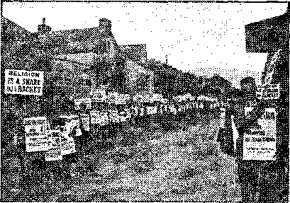Swansea. There doesn’t seem to be an end to this parade. Splendid advertising.
The local Clydach company, together with delegates from other Welsh cities, led the way. Those who engaged in “sandwich” parades and in the work of giving personal invitations to the people had unusual experiences.
A blind witness was personally conducted through business houses in and about the residential section by kindly people whom she met.
A skeptic, on receiving a folder from another witness, made a charge that “'the Society was making piles of money out of this stunt”. The witness’ challenge to him to prove it wns accepted, and. a visit arranged, which resulted in the placement of a set of 12 books. One skeptic wns convinced of the truth.
A drunken man, when being arrested, shouted at the policeman: “'Face the facts, man! face the facts.”
A young man, seeing the two placards “Serve God and Christ the King” and “Religion is a snare and a racket”, said they -were contradictory. His companion, pointing to the religion placard, replied: “Get away, mon! this means what a rotten lot the clergy am!” An-' other bystander added: “You haven’t got enough on that, Mister. It ought to read, hind millions are starving through it.’ ”
Although the omnibus companies lined up w’ith the religionists and canceled their contract with the Society, the chief newspaper gave friendly notices, and it should be here added, too, that they had quite a fair write-up of the lecture. There was a great turnout of 2,800 people to hear “Face the Facts”.
Jehovah’s witnesses and their companions returned to their homes from the greatest convention ever held, looking forward to greater co-operation with the New Government, and sorry only that (as at Hartford, Philadelphia and elsewhere) they did not remain quiet and keep their seats after Sunday’s broadcast, as expressly requested by the organization.
The Temple Theatre was well appointed, spacious, carpeted and an ideal place for a large convention. 'Volunteer automobiles provided free transportation to the cafeteria a little distance away.
The newspapers gave good publicity to a convention of the International Typographical Union, which was in session at the same
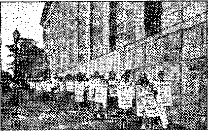On one of the nine routes. Birmingham.
time, but said not one word about Jehovah’s witnesses, having evidently been “'reached”.
The Chamber of Commerce also showed itself devoid of spine. After receiving full information regarding the convention of Jehovah’s witnesses, they issued a list of all conventions to be held in Birmingham the remainder of the year, but left Jehovah’s witnesses off the list, and plainly stated that they did not appreciate having them hold their convention there,.
But this was no surprise, nor did it interfere in the least with advertising “Face the Facts” from door to door with handbills, phonographs, sound cars, car placards, and by means of the “sandwich sign” parades, carried on almost continuously throughout the entire three days.
Nine definite routes were laid out downtown, covering the entire shopping district of Birmingham. Thousands learned of the convention, and were given an invitation by this means, who had no opportunity of receiving it otherwise. Many interesting and friendly remarks were made to the paraders. Numerous small children joyfully participated in this feature, and the zeal they manifested was inspiring as when the Lord Jesus rode into Jerusalem. The people took note of this and accepted more invitations from the little folks than from their older comrades in the march.
S5Owt of th© Mouth of Babes”
As the little folks rushed ahead and handed out the announcements the businessmen were struck, looked at them and at the “sandwich signs”, and said “Face the facts”. In a short while the whole city of Birmingham. was saying “'Face the facts “Face the facts !” “'Face the facts !” until the cry was heard all over, everywhere.
A witness was not privileged to play the "Relief” record in an apartment where the housewife was moving, had everything packed and was too busy to listen. Her little boy of 8 years, however, went along with the witness from door to door until finally he had a chance to hear the record. The lad listened, liked the record, and then insisted on carrying the phonograph until he had heard it played four times. ' He then wanted to hear the other side, and ■when people did not care to listen he piped up telling them that it would take only a few minutes; but none were interested to hear more than one side. However, he continued to carry the phonograph until the work was done, and then the witness played the record for him and gave him a booklet. She states that she never before saw such interest manifested by a child. His face shone with delight. t
Until Friday morning Charlotte had little interest in the convention of Jehovah’s witnesses. Not until the announcement was hiade that in London there had been "sandwich sign” parades for two weeks was there a real stir. Then the troops lined up as shown below and Charlotte had its first parade of this kind. As this joyful friendly company began handing out convention folders the people of Charlotte took a tumble. The phone began to ring, the newspapers wanted news, and the newspapers ^wanted to know what it was all about. From then on the convention was a success.
The "sandwich signs” were so effective that parades were carried on in Gastonia, Munroe and Rock Hill on Saturday, and paraders from Virginia, West Virginia, North Carolina, South Carolina and Georgia helped in the good work. One newly interested conventioner from West Virginia carried her six-month-old baby under the sign. -
Sunday night one of the newspapers phoned and wanted to know what "facts” had to be faced. He was given a brief statement that there is a conspiracy between the Nazis, Fascists, Communists and the Roman Catholic Hierarchy to regiment the people, set up a totalitarian state and deprive the people of their liberties; that these forces are enemies of God and His Kingdom as shown by the Bible prophecies. Pausing for breath the spokesman said, "I cannot think of anything to add right now,” and the answer was, “You have said enough.” In the otherwise nice write-up the point of the whole matter, that the Roman Catholic Hierarchy is at the bottom of the conspiracy against the truth, was studiously avoided.
Two men standing in front of the Charlotte convention hall rvere discussing the lecture given by Judge Rutherford from London on Saturday. One said: “Did you hear the lecture?” The other answered, "Yes, but I don’t understand. Jehovah’s witnesses say they are the only ones going to heaven., and now there is only one man, Mr. Dabb, Johnnie Dabb, I believe they call him, that is going to be carried through Armageddon.”
Jehoshaphat's troops at Charlotte getting ready to go forth singing
The nearest thing to opposition shown at the convention was a report from the stock room that a preacher brought in six books that his wife had obtained, saying that he did not want them.
A witness wrote: "Thanks to Jehovah that I have lived to be at this, the most wonderful convention ever, the outstanding features being the fulfillments of the prophecies we have so longed for and the great desire of each heart to conform obediently to the Theocracy. No wonder it puts fear in the heart of the enemy.”
A committee went to the City Hall to secure, if possible, the recreation section ’ of the Navy Pier. In view of the fact that practically all the individuals connected with the city administration are Catholics, it was doubted very much that they could get the facilities of the Pier for the convention. However, the committee was received graciously by William Lynch, the harbor master. Mr. Lynch and Oscar Hewitt, the commissioner of public works, assured the committee that the facilities of the Pier would be available to our Society. A. letter was sent to Brooklyn by Mr. Lynch and Mr. Hewitt outlining in detail the facilities available for the convention, saying, "It is the policy of his honor, Mayor E. J. Kelly, to invite and encourage organizations of your type to come to Chicago.”
Everything looked very favorable. The Navy Pier extends into 'Lake Michigan nearly a mile. It appeared as if the Pier would be an ideal place for our convention. Mt. Lynch assured us that we would have full possession of the facilities outlined in his letter the day after Labor .Day, when the navigation season officially closed.
A number of witnesses went to the Pier on September 6 to clean up the auditorium and make preparations for the convention. After they worked all' day, the superintendent, Mr. Hyland, told them that the Society could not use the Pier for their convention. He further stated that the whole matter would be explained if we called at the harbor master’s office at nine o’clock the following morning. (The witnesses noticed a. Catholic priest walking around the Pier shortly before this notice was given. It is generally understood that practically every employee on the Pier is a Roman Catholic.) On the morning of September 7 a committee of four witnesses called at Mr. Lynch’s office at the appointed time. Mr. Lynch was not in the office himself, but other employees seemed to be rather nervous and fidgety and very curt in their replies to any questions asked. We saw at once that there was trouble ahead. Mr. Lynch was on a vacation during the week-end, including Labor Day, and no one knew just when he would return to his office. The committee interviewed Mr. Lynch’s secretary, but received no information. Then the stenographer came out of the general office, and, without anyone’s asking questions, she began to talk about our convention and informed us that orders came from, higher-ups to cancel the agreement.
The committee then went to the City Hall to interview Mr. Hewitt. He was having a conference of heads of all city departments and they could not see him. They did notice prosperous-looking, well-dressed, heavy-jowled politicians running in and out of various offices of the City Hall. Occasionally a Catholic priest would join them. After waiting there several hours they were informed that Mr. Lynch was down at the Pier.ready to receive the committee. By this time we were getting quite apprehensive, as it was only about forty hours before 'the convention would open. Two witnesses were sent out to locate another auditorium.
The committee went to Mr. Lynch’s office and he informed them that they could not have the Pier. They called to his attention the fact that we had spent hundreds of dollars advertising the convention, that the Society had received a letter containing: an invitation from himself and Mr. Hewitt, and hundreds of people would gather here for the convention. He was visibly affected and stated he was very sorry that it was necessary for them to cancel their agreement. Pressed for his reasons, finally he showed a copy of a. Chicago Catholic newspaper called The New World, in which, on page eleven, column one, in the issue of June 24, was an article by a Bishop O’Shaughnessy, of Seattle, attacking Judge Rutherford. He said, "This is the reason why you cannot have the Pier.” When asked for a copy of the paper, he replied, "I cannot give it to you and I really should not have shown it to you.” One of the committee remarked that this was simply religious persecution.
Mr. Lynch assured us that he would do everything within his power toward securing another auditorium and meeting the additional expense connected therewith. He • called his secretary and had him make notes of the fact that more than $500 had been spent preparing advertising matter for the convention to be held at the Pier and that, if possible, he would have this amount paid to the Society on account of canceling the contract. '
Things looked very dark for the Chicago convention. The two witnesses out scouting for a new auditorium located the Chicago Arena, four blocks from the Pier. The manager of the Arena told them they could have the auditorium but it would cost $1700 for three days. After some discussion and explanation, he agreed to accept $1000 for the three days if Jw’s would clean the place up after the convention. The Arena is a very fine building for a convention. It has one of the most up-to-date public-address systems in the country. This auditorium was a hundred percent better than the one at the Pier, and, in addition, they were invited to use three large parking lots adjacent to the auditorium free. The convention opened on time and during the three days the witnesses had a' delightful time.
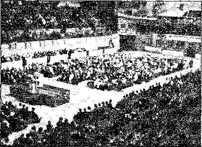Chicago Arena, interior view. There were plenty
of people there.
On Saturday afternoon the wonderful message from London was heard by 2,000 enthusiastic anointed and companions. Sunday afternoon the hall was packed. A thunderstorm raging all over the country led us to believe that reception from London would be very poor. Furthermore, we were informed that the Catholic bishop of Belleville, Illinois, had invited all Catholics and Protestants to join in a three-
day prayer that Judge Rutherford’s message would not readh America from London. Evidently Jehovah permitted Gog to put on an electrical storm from Chicago to New York hoping to interfere with the message’s coming to Chicago. From early morning Sunday until the opening of the convention it poured rain. Yet the message came in clear and distinct, with very few irregularities—and what a message it was! .
Further proof that the Hierarchy have their representatives in the offices of the public press is found in the following experience: ■
Friday, September 9, we tried to get the following notice put in the Chicago papers at full commercial advertising rates: «.
PUBLIC NOTICE
- City Officials canceled agreement for use of Navy Pier Auditorium for Judge Rutherford’s lecture for Sunday afternoon, as result of wrongful religious influence.
Judge Rutherford’s lecture will be heard at the CHICAGO ARENA, one block west of Outer Drive, between Erie and Ontario streets.
This lecture will be heard simultaneously by multitudes throughout England, .Australasia, Canada and America. All of us must face the facts.
By all means hear this lecture— FACE THE FACTS.
Judge Rutherford will also speak at 2 P.M. today in the CHICAGO ARENA.
FREE! FREE’ FREE;
Space was wanted three columns wide and six inches deep at regular commercial rate of $340, The committee that visited, the newspaper offices reported the following at the Chicago Tribune office: UA young lady called up a couple of people and informed them the ad would have to be passed by their censor, Mr. Tirney. Then they found Mr. Tirney was out of town. They were then referred to Mr. Stevens. He looked at the ad and said that it must go to Mr. Hil-dengarten. - Mr. Hildengarten looked at the ad and said it would not be acceptable and they must see Mr. Tirney, who was out of town; and there the matter ended. This saved ..$340 and. the notice got before the people through news items.
M't. Lynch, the harbor master, assured us they would co-operate 1.00 percent in our efforts to secure a suitable auditorium and inform the people of the change. Friday morning the witnesses went down to the Pier with a sign announcing the change. -Mr. Lynch assured us the sign could be placed anywhere we desired to have it placed. An officer told the witnesses they had orders from the harbor master’s office that no sign could be put up. Evidently the priests had given their servant, the harbor master, further orders. The witnesses who carried the sign down there said, "We will stand here and hold it.” The police officers said, "That sign should be wrapped around Judge Rutherford’s neck.”
Several "sandwich sign” parades were put on, using the cards prepared by the Society, having pasted stickers on these signs announcing the change from the Pier to the Arena. Some of the friends in the "sandwich sign” parade reported items as follows:
"Two nuns accepted the fliers with a smile.”
“One man approached us and asked if we were opposed to saluting the flag. I assured him we were, lie inquired why, and I called the scriptures to his attention and he seemed to be satisfied. The gentleman wanted to know if Mayor Kelly had anything to do with canceling the agreement to use the Pier.”
“As we walked in front of stores, in some cases businessmen came out and asked us for fliers to give to their customers.”
"'Even though there is a strict ordinance against ’ distributing fliers in the Loop section, several policemen told us to go ahead and distribute them, that it would be all right.” ’
“I gave a flier to a schoolteacher and she said they already had them and it was^he talk of the school as to why the city officials canceled the agreement to let us use the Pier. This teacher said, ‘We always thought the Catholics ran Chicago, and now we know it.’ ” $
A special pioneer from Milwaukee reports the following experience:
“While witnessing in a Catholic territory I played the ‘Resolution’ record. A woman became so angry she threatened to turn the hose on the car and me. She followed us along the street and tried to interfere with the work.” The witness told her she was out of bounds in acting as she did, and then she went into her home and called the police. The policeman placed the witness under arrest. He asked him what he was doing, and the witness replied that he was preaching the gospel of the Kingdom. The officer asked him a number of pertinent personal questions and then took him down to the police station. There were five officers in the room and the witness asked the privilege of playing the records, “Resolution” and “Relief”. The desk sergeant became very angry and wanted the record stopped, but the other policemen seemed to be interested and demanded that it be run through. The sergeant became very angry and used vile words in addressing the witness, saying, "If you come to my house 1’11 punch you in,:. the nose and break your machine.” The witness informed him that that would be against, the law. All those present gave the sergeant the horse laugh. Then the witness was told he might go and that he -was released.
Another witness reports the following: "When I witnessed to a lady at her door, she said, ‘No, I cannot let you in, because the priest broadcast last evening and told us not to let you in or have anything to do with you? ”
A lady approached a witness in the "sandwich sign” parade and said,• "Is Judge Rutherford the man that is going to deliver the lecture on ‘Face the Facts’?” The witness said he was, to which the lady replied, "Well, if that’s so the Catholics are in for another helluva trimming.” Evidently the lady was a prophetess.
As soon as it became known outside of Jehovah’s witnesses that a convention was being planned, opposition began to appear. The Chamber of Commerce was frigid. Two days before the convention two policemen rudely trespassed at the Pioneers’ home, became rude and abusive to both men and women, saying, "We must stop this work,” and, "You will have to get out of this house.” Pressure was brought to bear on the manager of the auditorium, and he disclosed that it had emanated from Roman Catholic sources. .
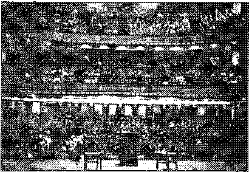Cincinnati. The Emery Auditorium was packed to the roof. '
The convention was a great success every way, with the main auditorium packed to the roof, but the newspapers did nothing to accomplish this end. One boasted that it would print nothing about the convention, and kept the promise. In two other cases there is reason to believe the reporters turned in good stories and that they were blue-penciled by the city editor.
There was a perpetual “sandwich” parade. Some went to their territory and covered it that way, as wull as with the Warning booklet. Others patrolled the streets, in twos and fours, going one way and returning another, by routes mapped out in advance. Thus Jehovah's witnesses effected their own publicity. When a streetcar stopped the “sandwichor” on parade window’-shopped a little, to give the passers-by a chance to read the notices. Three blind witnesses paraded in front of the auditorium.
A comical incident happened when two “sand-wichers” met two witnesses near where two priests were talking. A little show was put on for their benefit. The “sandwichers” handed the witnesses handbills, and being by them assured that they had read some of Judge Rutherford’s books with great profit to themselves, and would surely attend the public meeting, they then offered handbills to the priests, who, white to the lips with anger, refused to take them.
A sound-car operator announcing the lecture on the opposite side of the river, in Kentucky, was approached by a policeman who admitted that a priest had sent him. He listened to the speech of the operator and promised to come to the public meeting on Sunday and face the FACTS.
Despite the excellent food served at the cafeteria, some 50 were ill for a time on Saturday because of something not ascertained. The newspapers did not. forget to mention that unimportant item, but not one word about the message of God’s kingdom and the expose of the present great monstrosity, totalitarianism.
The Emery Auditorium proved to be an almost ideal place for holding the convention. The management was very courteous and obliging, after their first scare about the Hierarchy, and assisted the conventioners in every way in their power. Acoustics were perfect and the reception from London superb.
. From the very start it was apparent that the arrangements were being supervised by Jehovah’s organization invisible, because when some difficulty arose, calculated by the enemy to obstruct, it was brushed aside by some power beyond that of man.
' Confidently believing that Jehovah had arranged for perhaps the greatest witness of all time, the largest and finest auditorium in Cleveland was sought. Of the places that had been previously used none were available. The Lord was evidently directing the witness to the Arena. This is a large sports arena with a seating capacity of about 13,000 people. The president of the Arena Company was approached and the whole matter of the convention explained to him. One of the directors was in the office of the president at the time two of Jehovah’s witnesses called to ask about the Arena, and in answer to their various questions a witness was given, with the result that both the president and the other gentleman obtained a complete set of bound books. They were most kind and considerate and very co-operative, placing the Arena at the disposal of Jehovah’s witnesses at a minimum of cost.
Everything went along smoothly until the Devil got busy through his offspring, the Roman Catholic Hierarchy. The president of the organization is a Mason, presumably; his wife is a Catholic, and his children go to Catholic school. The monsignor got busy, probably through the wife, and began to disturb her husband, the president of the Arena. On the Thursday before the convention opening the two J.w’s were called to the office of the president ; he was greatly agitated. It was noticed that he had been interfered with. For three hours a battle ensued. He desired to cancel the contract; he would persuade ; he threatened—he accused Jehovah’s witnesses of subterfuge.
He in turn was told that Jehovah's witnesses had no intention to cancel the contract or withdraw from their privilege of using the Arena for their convention; that-they knew full well where the opposition came from and that if he insisted on interfering with the fulfillment of the contract he would have to fight the matter out in the courts, and not only that, but the “skunk” behind the scene that was creating all the noxious odor would be brought right out into the broad daylight and publicized from Dan to Beersheba. The witnesses left the office, putting the responsibility of carrying out the contract squarely upon his shoulders, having effected no compromise.
A Square Backdown—and Why *
Within an hour a telephone call was received at the office of one of these witnesses to come and see the president at a time convenient to them.. He stated he had carefully considered what the witnesses had told him and that he
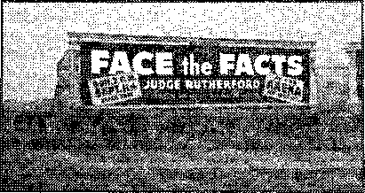One of Cleveland’s huge billboards
had entirely changed his mind, reversing his position, and that he had no opposition whatsoever to Jehovah’s witnesses’ using the Arena and carrying out every detail of their plans to the letter. He felt very much relieved in mind.
. Of course, the witnesses were glad that the Lord had so directed as to give a complete victory in this case. At a later date it was found why the president had changed his mind. From a reliable source of information it was learned that one of the high Catholic officials had stepped into the picture in the endeavor to have the owners of the Arena refuse its use to Jehovah’s witnesses. The president, in fear, had'gone to the monsignor in question, and laid the whole matter before him. This visit was after his conversation with Jehovah’s witnesses.
After the monsignor heard all the details the president asked him what he should do. The Catholic official said, "'Well, if you accept my advice, you will not try to interfere with Jehovah’s witnesses. Carry out your contract to the letter, because if you don’t they will advertise you to the whole world and tell truthfully why they cannot obtain and use the Arena and you would be ten thousand times worse off than if you allow them to use it.” This was the reason for the president’s ease of mind. And so the Arena was used—a fine new spacious building, and the message of the two speeches from the Lord was thrilling beyond measure. A goodly number of pieces of literature were placed with the different Arena officials, and all seemed to be glad that Jehovah’s witnesses had been given the victory. It seemed so clearly manifest that Jehovah purposed that this should be done in the city so pHest-ridden as Cleveland. ■
Whetted Appetites
This opposition came at an opportune time; for it served to whet the appetites of Jehovah’s little army in the Cleveland area until they were ready to face a firing squad if it were necessary. Such is echoed in the declaration given by one witness, which is just a sample of the general spirit of the convention.
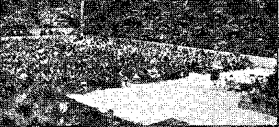Over 7,000 at this assembly. Cleveland
This was her declaration: “I want to say, friends, that I can truly appreciate the witness Steinle’s great privilege of serving Jehovah behind prison bars in Hoboken, as in August, 1936, I was one. of those who were arrested in that same manner by the same man and was sentenced to thirty days. I cannot tell you the pleasure and joy I was afforded in serving Jehovah in prison. It has made me more determined to serve Him, as I love Him, and I would like to be remembered in your prayers. Not even the firing squad will keep me from giving my all to Jehovah and His Son Christ Jesus.”
Cleveland. Some of the “sandwich” paraders
The lecture on “Face the Facts” was advertised more completely than perhaps any witness given before. Two large billboards were used on two of the main arteries at points where practically all the downtown traffic moving out to the suburbs had to pass. This gave opportunity for hundreds of thousands of people to be notified of the Sunday meeting. ■
Two men stopping at the traffic light and Jooking at the sign were heard to say, “Bill, Just look at that sign. Did you ever see the likes of it? Where on earth do these people get their money ?” His questioner answered saying, “Don’t you know? These people are better organized than any other group of people on this earth; I understand they have just put through some further organization, and that shows what can be done when people work together.”
In connection with the matter of organization an amusing incident took place in the town of Orrville, Ohio. A .witness had been arrested for using the sound car. It was clearly a case of malicious prosecution. A large number of witnesses went to this small town in support of the witness who had been arrested, to attend. the trial. It was such an unusual thing for this small town to witness such a large group of people that a man was heard questioning the marshal: “What does all this mean? Who are these people ? Where does all this come from?”' The marshal said: “Don’t you know? And say, you better not bump up against them: if one of their group gets into trouble all of the others come and help them; I understand they are organizing into some kind of groups or companies or zones, and if anyone gets into trouble in one company all the others pile in on you. If you don’t believe me, just look at this gang.” This all serves to show the attitude of those who are faithfully carrying out their obligations and privileges at this time.
Of course, there were house-to-house calls made; thousands of individuals were personally invited to attend the Arena. Hundreds of thousands of handbills were distributed; signs on automobiles; invitations and declarations by sound cars; banners across the street; large signs on private property; small signs on the bumpers of the automobiles;—everywhere you went you could see “'Face the Facts”, “Face the Facts,” until it almost began to be a byword in the Cleveland area. Never before was such an effort put forth to advertise the Kingdom as on the occasion of September 9. All this was climaxed by a continuous stream of “sandwich” parades, converging at the busiest point in Cleveland, the Public Square. There were thousands of people in the Square ; many of them were heard repeating the words “Face the Facts”. Police held traffic while the parade went by.
Declarations
Witness Miller: It is quite interesting to know that there are still people in Cleveland vicinity that will listen to the phonograph. I called on a home today where nobody was home but a young gentleman ; so I told him that was fine, and that he would probably have a few minutes to listen. I played the “Enemies” record for him and he said: “I do not know what you. believe, but I think religion is a racket. I always ha,d to go to church when I was younger, and I do not think much of it. What do you think of religion?” I said: “You told me about the same thing that I came here to tell you.” He said he would be at the convention tomorrow if he could. '
Witness Berkets: I was operating the sound car from the .Akron company this morning and I was assigned to a Catholic hotbed. We had just about finished the record “'Belief” when I noticed a man approaching the car with a hammer in his hand. I thought he would use the hammer either on the record or on me, as I saw that the man was coming closer to the car. I said “Good morning” to him and he came up to the car and rested his arms on the car window and I said: “What do you think of that ?” He said: “I believe that the judge knows what he is talking about.” So we found out that .this man was deeply interested in the truth. I gave the man a booklet, as he had no money to contribute, and just at this time a couple of sisters who were working with the sound car came up. A neighbor of this man thought he was finding fault with the sound car; so he approached us, and one of the sisters wanted him to take one of the booklets. This man proved to really be one of the “goats”, as he thought that if the other man had wanted to start something, he would help him out. We found several in this neighborhood that 'were interested and it was strictly a Catholic neighborhood. I have been ordered to go back to Akron in the morning and broadcast the lecture from the sound car.
Witness W.: Just before leaving for the convention., one of my fellow workmen in the railroad yards spoke about the movement on foot in some of the convention cities by the Hierarchy to try and stop the friends from coining into the cities. I told him that we could call thousands of workers to come into any city and work it, and he said if anything of the kind turns up to let him know and he would be right there with us. This morning, while witnessing here in the city, I found a man working in his garden when we came up. He said, “'Yes, 1 am interested in those things; and when the trouble breaks, these people who have looked to religion and such things will have nowhere to go.” I told him that was true, but that the Lord's people would have a place to go ; and he agreed with me. He was out to the meeting this afternoon and will be out tomorrow,
A volunteer orchestra of a dozen pieces “made a joyful noise unto the Lord’ during the song periods. A touching circumstance was the presence of a blind brother—who needed no music, as the melodies of praise -were already in his heart. And, of all the musicians, he played the best! ’
The majority at Dallas were Jonadabs; 26 were of four Rogers brothers families in a small Texas town where three years ago none were interested. '
Sorry there is no room to publish smiling faces of El Paso “sandwich” paraders. 'Others paraded, too, three days.
Despite a heavy downpour, there were 1,860 at the public meeting and 1,646 the day before.
On Saturday, fifteen minutes before the speech came through from London the transformer on the amplifier burned out, but the trouble was corrected and wonderful reception of the program followed.
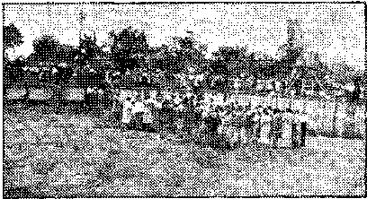Baptism in Dallas
A man, his wife and two children “couldn’t possibly come to the convention”; so a pioneer brought them. They slept on the ground and ate in her trailer and greatly enjoyed the convention.
A preacher marveled that Jehovah’s witnesses should have “'found some of those Jonadab descendants of Jonah and put them to work”.
Several truckloads of eonventioners came from various cities, far and near. All worked enthusiastically to make it what it was, a great success.
On Monday the Dallas Morning News contained a splendid write-up of the convention, featuring particularly the baptism in the Park Pool. The pictures of the baptisms were four columns wide, were taken at closer range than the one reproduced herewith, and were really excellent in design and execution. A< ■.
Besides the photographs of the immersion, there was a racy, readable story, written in friendly vein, of which only a few sentences may be selected:
Gray skies frowned upon the proceedings, threatening at any minute to baptize the crowd of several hundred spectators as well as actors in the service with a deluge of rain.
A sharp wind, whipping out of the east, set many teeth chattering as candidates emerged from the ehill water. s
Several had come unequipped for the ceremony, were forced to wait until a friend had been baptized, borrowed his or her wet clothing and climbed into the pool in a second shift.
Still, baptizing of the entire 110 took only twenty minutes.
A -wide-awake convention servant obtained publication of excellent news items in 28 newspapers, with two million circulation, calling attention to the lecture “Face the Facts”, coming to Denver from Judge Rutherford in London.
The Roman Catholic Hierarchy’s jackass department. admit that they tried frantically to prevent the convention. Their effort was a complete failure. The manager of Elitch’s Gardens, one of the finest auditoriums in the west, stood by his bargain like a man.
One editor, a Catholic, at first refused to take the convention write-up because he thought it was too religious. When told that it vras not religious, but that religion is a racket, he admitted that is true and gladly published the write-up.
Fifty thousand convention announcements
were distributed, six.hundred placards, radio spot-announcements, “sandwich sign” parades, sound car announcements and large signs on cars were used preliminary to the Sunday broadcast. The Denver sound car, carrying large signs, made spot announcements' to all near-by towns over a period of two 'weeks. Officers tried to break up the “sandwich” parade, but did not succeed.
A Jew told the cafeteria chef to name his own price for baked goods. A crockery concern expressed astonishment that not a spoon was missing or a dish broken.
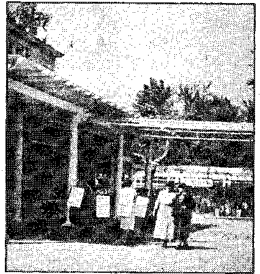A few paraders. Denver
Catholic gangsters worked a telephone racket-on the radio stations and caused them to break off the lecture in the middle. A thousand phone calls were registered in fifteen minutes by men trained in the same organization as trained Al Capone and Dutch Schultz, and the radio stations could not take it.
A man of good will said the lecture ‘was worth $50 to him to hear the judge.romp on ’em’, so he put $50 in the contribution box. Another man contributed $20 for a copy of The Messenger carrying this story.
The Denver Chamber of Commerce had cold feet, neurasthenia and sick stomach.
An old man drove forty miles to hear the Sunday talk, and said it was the greatest thrill of his life.
A man who listened to the lecture by radio in his own home -was so impressed that he hopped into his car and drove to the auditorium in the ram in order to obtain the books.
A Catholic, disgusted with the yellowmess of the Catholic Hierarchy’s jackass department, said, “The Catholic organization is the rotten-est organization that anyone could imagine, and I hope your organization will tear it all to hell.”
zl keeper of Elitch’s Gardens said he had never worked with such fine people. The assistant manager expressed profound amazement that Jehovah’s witnesses do not smoke. A policeman remarked, “This is the best bunch of people I have ever seen here; they keep the grounds clean.”
While the sound equipment was being installed someone telephoned to the police, trying to make trouble, and they came out and wanted to know if the witness installing it had a permit to do so, and if the equipment was high voltage. The witness identified himself, stood his ground, and firmly insisted that he did not need a permit to install his own equipment. At length the chief of police backed him up in this position.
Saturday night trouble was anticipated; but 25 witnesses watched everything carefully, and nothing was started.
Two auditoriums were engaged, Masonic- Temple and Eastern Star Temple, and both were packed. Courtesy cars maintained a constant shuffle, so all could eat without delay. Pioneers were served meals free. The chefs were unexcelled and knew better than to cook in aluminum. .
The Jonadabs were elated with the Saturday talk from London as they saw that instead of being an overflow of the remnant, the Lord has a definite function for the.m. to perform in connection with the vindication of His holy name. They participated with a will in the distribution of radio folders and handbills and carried on in the “sandwich” parades in spite of rainy weather. It was not unusual to see rain-drenched paraders handing out folders on the sidewalks of downtown Detroit, quite oblivious of the falling rain.
Sixteen sound cars spent Sunday morning making spot announcements advertising the Sunday afternoon lecture, and many early churchgoers Avere thus notified. Preparations had been
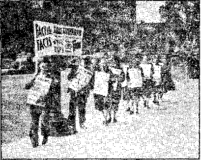Detroit. An attractive means of advertising “Face the Facts”
made in advance to rebroadcast tlje Sunday lecture from public-frequented parks.
The real climax came when the speech “Face the Facts” was delivered from London, England. Every available seat (2,700 in number) in the Masonic Temple as well as the lobby and Eastern Star Temple (capacity 1,300) was occupied. In fact, each place was to the point of overflowing and many friends were required to hear the speech in Cass Park, just opposite the Masonic Temple, or in front of the Eastern Star Temple, where the speech was rebioadcast by radio from sound cars. With this mighty array of sound equipment Jehovah’s message went out to the people in its characteristic fashion of boldness and uncompromising quality. As the speech progressed heads were thrust out of adjoining hotel windows; car drivers pulled to the already filled curb to 'listen. In fact, even the police were there, but with a different purpose in view. They attempted to stop the lecture which was being rebroadcast from the lot adjoining the Eastern Star Temple, on the grounds that they had 200 objecting telephone calls in twenty minutes. They chose a very inopportune time, however, because, just when they were sallying forth with great affront, the judge bellowed out “even the police of various cities right now are attempting to stop this speech”.
Crowd Cheers
These words spoken at such a crucial time sounded the retreat for the. officers. They slunk back to their squad cars defeated in. their attempt to carry forth the Devil’s purpose. Their retreat was marked at every step by the cheering crowd of interested listeners gathered about the lawn of the Eastern Star Temple.
The reception of the Sunday lecture was fine. Every word was clearly understood and the great crowd thrilled with the knowledge that together with the Lord and His heavenly host they were meeting the savage attacks of the enemy unafraid.
It is not easy to describe the electrifying effect of Judge Eutherford’s addresses from London, September 10 and 11. Hartford cablegrams said, in part:
Nineteen hundred send loving congratulations. Fresh Kingdom revelations convincing, sobering, comforting, thrilling, inspiring.
Thirty-five hundred gave rapt attention to forceful expose of hideous monstrosity. Local religionists instigated forty-eight arrests. Decisive victory over malicious opposition.
The self-advertised service of the Hartford chamber of commerce turned out to be of the. wooden-nutmeg variety. The mayor is a Roman Catholic. The secretary of the chamber resigned when the Bushnell Memorial Hall management rebuffed Jehovah’s witnesses. Every director of the chamber was mailed a copy of Consolation No. 495, telling the Bushnell story.
The mother of the man at the head of the Bushnell Memorial Hall management is a fine Christian woman, deeply- interested in Judge Rutherford’s writings. After her son; yielded to Catholic Action pressure she was heard to ask him over the telephone if he is now working for Bishop McAuliffe. Every member of the board of trustees of the Bushnell Memorial Hall was mailed a copy of Consolation No. 495, so that they might see their treachery to Bushnell’s memory.
Every citizen of Hartford had a copy of No. 495 put in his hands. Now let the chamber of commerce, the Bushnell Board and Bishop McAuliffe laugh that off.
Among the Outcasts
Jehovah’s witnesses were crowded out to a run-down amusement resort, sublet for fighting, roller skating, roller coasting, dancing and bathing. The seats and floor of the boxing arena, where the overflow must meet, are patched with tin; the coaster no longer coasts; the basement of the rink was filled with rubbish. '
The witnesses cleaned the rink from top to bottom, basement and all. Hundreds of yards of white paper made an incredible transformation. Carpenters and electricians worked night and day. Cooks served food that would be a credit anywhere. Ushers, sign painters, musicians, physicians, watchmen, clerks, were of the New Government.
Catholic Action Malice
No prize fights had been booked for Saturday or Sunday, but the arena sublessors actually tried, dog-in-the-manger style, to prevent the convention altogether. They telephoned the owner in New Haven. He came and said to the Catholic Action crowd, "These people have given this place the most thorough cleaning it has had in years; if you are not willing to treat them right, pick up your own traps and get off the premises.”
Then a person alleging in an evasive manner that he represented the fire department came in and stated Jehovah’s witnesses might not use the rink as an auditorium (though thousands of others had done so), because the seats are not screwed to the floor; but the seats had never been so fastened at any time.
An hour before the first London broadcast a voice over the telephone said peremptorily that Jehovah’s witnesses positively could not hold their convention in the rink. The person was invited to come, identify himself, explain his reasons to the 1,900 persons assembled, and receive his answer. He came not.
The Hartford Courant, the city’s best paper, gave good reports at first, but the city editor worked a deliberate lie into the final story, that the lecture did not come from London at all. He preferred to lie, rather than call up the telephone company to learn the truth.
Catholic Action Police
At Columbus, Ohio, where Judge Rutherford addressed 30,000, nobody was arrested; but in Hartford and its environs 48 were taken in, nearly all by police with Catholic names, yet with 3,500 visitors in their midst not a Hartford cop had enough interest in his ostensible work of preserving order to visit the convention in three days.
In Meriden a plain-clothesman asked a witness if he might have a free copy of Consolation. When his request was granted he was told, he was under arrest. Arrest for what? Such a community would be a thousand times better off, and safer, if like many orderly communities where a bluecoat is never seen from one year’s end to another.
A witness called on a lady who wanted to know if the witness was afraid, and if not, why not. This lady brought out Protection, one of Judge Rutherford’s books, explaining that she had obtained it from a good woman who was arrested by the chief of police just as she left her door. After listening to a record she said, “Now I know why that good woman was arrested. I intend to find out about God and His organization, and about the Devil and his racket, the Roman Catholic Hierarchy, and will be at the lecture Sunday.”
A witness, in^ Meriden, was repairing a tire when he 'was arrested, and at the police station the desk sergeant, called him all the filthy names he could think of, telling him that if he had called at his door he would have "'knocked his G------d---- head off”. And thus the Holy
Name Society section of Catholic Action comes to Meriden.
Admissions by Police
One witness was threatened with arrest by an officer who later admitted he was bluffing, had the literature, and knows this is a good work.
A witness being booked in Meriden heard the sergeant reply to a telephone call, "'Bring them all in, whatever they are doing,” and another heard the same person say to someone, "'All right, Father; we have some of them here now.”
A witness made his first call as a Jonadab and was arrested by 'Officer Kelly at the second house. The witness (a youth of 16) at headquarters asked the desk sergeant to read the Supreme Court decision in the Lovell case. Warned not to do any more work, he returned to his territory, resumed his duties, and Mr. Kelly arrested him some more. Next morning the prosecutor refused to act.
A witness calling at the home of a court official was told: "'You are standing before Pontius Pilate, as Jesus did.”
In Meriden, in a section where previously many arrests had been made, the population, mostly well-to-do Catholics, were friendly, urged the witness to be very careful, and some even wished him well in his work.
New Government Order
On Friday night a crowd of toughs came to the grounds, tearing off signs, shouting "Jeho~
Several of the many sound cars in use at Hartford
Hartford. General view of Capitol park, showing bleacher seats
A portion of the Hartford trailer camp. These were filled during the broadcast.
Building used for cafeteria after being cleaned up*by Jehovah’s witnesses
vah” and threatening return. Forty guards were then placed by the witnesses, covering every opening and entrance for people and for elec-trie current. When such groups were spotted (as by smoking cigarettes, throwing away programs or using unbecoming language) a patrol joined each such group, walked where they
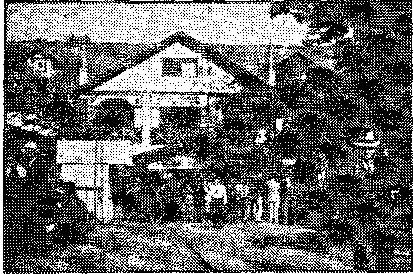Main entrance to Capitol park skating rink
walked, stood where they stood, and sat where they sat, at every occasion wheeling and looking them kindly but firmly in the face. Five groups, of up to ten persons each, were thus spotted and accompanied.
A witness heard one in such a group say to another, “How are we going to pull the G—-— d---- thing down?”
Under the Totalitarian Flag
A witness was conversing with a lady in New Britain when her little boy came in, asked if she was one of Jehovah’s witnesses, and, when answered in the affirmative, said to his mother: “Why don’t you kick her out? The priest said to kick out any of Jehovah’s witnesses when they come to the door.”
The same witness called on a family that confessed to the priest that they have a Bible; he advised them to throw it away.
A witness in New Britain was graciously received by a gentleman who wondered why the
witnesses are so hated. His own wife, by her own admission, had kicked the last one out /by order of the priest). ■ ’
In the same city a witness was invited into the house by a well-dressed man with a big cigar in his mouth, who extended the invitation only as an excuse to abuse the witness, kick him and push him out of his house.
A young Jonadab, out in the work for the first time, was thrust out of two houses in a single morning.
A witness was in a barber shop, had played two records to appreciative listeners, and placed literature with them, when the proprietor shouted in dismay, “Here comes the priest/’ and ordered the visit terminated.
A witness who was called a vile name by the head of a house, and was then arrested, was taken back to his territory after he had explained the work. -
A witness in Meriden was accosted by a female car-driver who threatened arrest unless she got out of town.
Another witness was followed by boys shouting, “Get the cops after them. Jehovah’s witnesses are peddling literature again today.” This did not frighten one woman. She listened attentively to a lecture record, and when her neighbor downstairs demanded to know if the person playing the record had a permit to do so, she shouted back, “I don’t know and I don’t care.” When the record was finished this noble-minded woman said, “What a wonderful lecture that is! God ought to kill all opposers; for they are very wicked.” She asked for meetings to be conducted at her home. On leaving the home the witness was arrested. ’ '
Wonderful Blessings from on High
..A witness, a week before the convention, praying she might find someone who loves God, found a lady who obtained an entire set of Judge Rutherford’s books on the first interview, attended the con.vention, subscribed for The Watchtower and Consolation for herself and for The Watchtower for her mother in England, and went home announcing her intention to identify herself with the witnesses. All in a week. '
The electrician and others were deeply impressed by the fact that the entire broadcast .from London came through admirably on September 10, but at the close of the program., almost immediately after Judge Rutherford had finished his address, the power transformer burned out. But by midnight everything was in as good condition as before, and the con-ventioners heard the marvelous address on “'Face the Facts” as clearly as if -Judge Rutherford had been in the room.
Despite terrific heat and constant rain the huge auditorium was filled and the convention was a tremendous success. What a thrilling experience to. see Jehovah’s great organization, wheel within wheel, functioning so perfectly ’ On the stage was a beautiful red oilcloth banner 36 feet long, with appropriate lettering, “The battle is God’s; be not afraid.” In front of the auditorium was a sign ,70 feet long. In many parts of the city were signs 10 feet long.
A “sandwich sign” parader, asked what the strike was about, quickly answered, “Against the Devil and all his works.” At the Saturday evening business meeting of Jehovah’s witnesses two Catholic men, with, a stenographer, were behind the stage taking down what was said. No Jesuit can ever mind his own business.
On August 15, 1938, the Music Hall of the Sam Houston Coliseum was leased, to Jehovah’s witnesses free of charge, as is the custom of the civic authorities of Houston in such cases. As elsewhere, such expense is counted by the city as advertising the city among its visitors. Sectarian lines are unknown in the making of such arrangements. '
The witnesses made tremendous preparations, incurred very great expense for advertising, invitations to thousands, telephone connections to London to receive Judge Rutherford’s addresses, and cafeteria and other arrangements, when they were suddenly notified, of an injunction suit threatened against the city, the mayor and city council unless they forthwith paid $321 for the use of the premises, somuJ operator, stage hands and air-condii inning opera mrs of the city. No other organization using the hg 1! would have had to face anv such demands, in violation of a bona fide contract, and in violation of uniform practice; but to prey|fi||:|||;i convention’s being killed, Jehovah’s wtinesses, at the last moment, paid the sum,
Scathing Letter to the Mayor
As soon as the convention wasmye|;|||;|||||||| man for Jehovah’s witnesses wrom t-ne mayor a 1600-word letter that onght io give him nightmares for the rest of his life.
only a brief extract:
I have been informed that because of pressure brought to bear upon you by Bishop Byrnes you took this course. Because of false statements made about us, which, were derogatory, you, the mayor, got in touch with several of the Protestant ministers. You were finally told by one such minister, Pastor Knowles, of the Central Christian church, that we are all right.
Frankly, we do not understand why, in such an enlightened age, and in a country which is based upon liberty and freedom of thought and action, the mayor should have inquired of others as to our belief as a pre-requisite to the use of this. hall. This is supposed to be a free country, and freedom of religious belief is accorded to all, both the low and the mighty, and the rich and the poor, and it is supposed that no person should be denied any civil rights because of such beliefs.
Countless hundreds visited this city on account of this convention. Thej^ brought money into the city and spent it for the benefit of the city. Jhis convention helped the city financially as have other conventions. Why should the mayor take an action which would result in un-American influence to discourage, in Houston, conventions of liberty-loving Americans ?
The only way in the world in which this gross wrong done us can be undone is to refund the money ■wrongfully exacted from us in violation of your contract. We can assure you that in returning this money no harm or wrong will be done and that you will have no cause for fear of the vicious, political and un-American pressure by ths enemies of Jehovah’s witnesses, because the convention is now over. These persons do not oppose the repayment of the money. 'What they do oppose is the proclamation of the truth -which -was spread by the convention.
We respectfully submit and'request that immediate steps be taken for a repayment of the sum wrongfully required to be paid by Jehovah’s witnesses. In doing this you will be doing only what 'is right and what is American, i. e., providing equal justice and right to all, and not unlawful discrimination.
If all others were required to pay for the use of the hall, then we would have gladly paid the same without complaint, but since others do not pay for its use for convention purposes, we therefore demand the return of the money so paid for such convention use of this hall.
“Wonderful beyond the description of human words >” This is the unanimous expression of the 500 Kingdom publishers who assembled at Scottish Rite Temple to participate in the worldwide convention. Fifteen hundred were present at the public lecture.
We were unable to obtain any co-operation from the chamber of commerce or its tourist and. convention bureau. They first tried to get rid of us by saying there was no hall in the city with the facilities we desired. When asked about Scottish Rite Temple they said they had no information on it. It might have been expected they rvould express some regret or apology for being unable to take care of our requirements, but they seemed rather pleased that they could offer no encouragement, and did not. do or say anything to make us feel welcome. They reluctantly accepted our “'copy” for the newspapers and said they doubted if they could get it published, but would try. We were able to get one pretty fair write-up in one paper by-bringing pressure upon the convention bureau manager through a, personal friend of his, a professional man, who is a Consolation subscriber. The other paper carried a short paragraph about the convention after it was over. These two articles -were the extent of newspaper publicity. The telephone company promised to co-operate in getting a write-up in the papers, but failed completely.
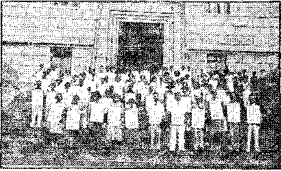Jacksonville. “Sandwich sign” paraders ready for the march
There has never been any active opposition to our work in Jacksonville; no arrests or persecution. . The city seems to have adopted an attitude of ignoring us altogether; and this attitude is manifest on the part of the newspapers, radio stations, chamber of commerce, public officials and the people generally. Refusal by the radio stations to broadcast Brother Rutherford’s speeches is in line with this attitude. The attempt last fall to compel children of Jehovah’s witnesses to salute the flag was quickly dropped ■when one of the newspapers gave' the matter a lot of publicity. However, everyone knew that the newspaper’s action was purely political, because it saw an opportunity to rap the-present
city administration, to which it is politically opposed. This is proved by the fact that this paper would give us not a single line of publicity before the convention, and only one short paragraph afterward.
The only exception to this hands-off rule is in the case of a few of the more radical preachers. One of these is reported to have held up the Warning booklet at his Sunday evening meeting and demanded that if any present had obtained the booklet they destroy it at once. This information was given us by a lady who was there and who had the booklet. She said that hereafter she will be at our meetings and will never darken his doors again.
J: was a pleasant surprise on Saturday morning when word was received that Station WFOY in the Hierarchy-ruled town of St. Augustine had been engaged to broadcast the speech "Face the Facts”. Immediately a witness was sent to St. Augustine to interview the station manager, and in a few hours he reported back that everything was in readiness for the broadcast. The manager told this witness that he had feared the Catholics in the past but had made up his mind that he would broadcast Judge Rutherford’s speech, and if the Catholics desired to reply the station would be available to them if they were willing to pay.
A witness handing out radio slips in St. Augustine Sunday morning met a Catholic priest who "was very indignant and declared he would see that the lecture was not broadcast there. A few minutes after the lecture started we received a phone call from the station manager saying the wires had been cut between the studio and the transmitter and could not be repaired in time for any of the speech.,
Kansas City, the "hard heart of America”, welcomed Jehovah’s witnesses with open arms, until it was discovered that this was not just another commercial religious organization come to enrich the commercial coffers, but an organization assembled to become enriched in the Lord and interested only in becoming better equipped to serve in Jehovah’s organization. The convention was a huge success in every way.
Jehovah’s witnesses were far from welcome in Kansas City. Although the people of good will were happy to have so many of Jehovah’s witnesses here, the rest of the city was not interested—not even curious to know’ what was going on.
Hundreds of the publishers, Jonadabs as w’ell as the remnant, took part in "sandwich” parades
Kansas City lined up ready to move into the business sections of the city.
Oldest witness in Kansas City (age 104) and a newcomer
every day, both in the morning and in the afternoon and evening; a wonderful witness to the great name of Jehovah God. These paraders, who operated in groups of two and three because of restrictions by city officials," could not be ignored; they could not help but be noticed in all sections of the city. Signs were prepared for 300 to engage in each parade, and each time practically every sign was in use, not to mention the great number of automobiles, sound cars, etc., which carried both large and small signs.
The Kansas City company has been operating a sound car throughout Kansas City for a year, and when we began this operation the captain of police informed us that (despite an ordinance) the police were not picking up operators of sound cars unless special complaints were received regarding the individual cars, and that we need not be afraid of being molested. This information wyas given sound-car operators that came to the Kansas City territory.
Twenty-five sound cars arrived for the convention, and these sound cars were operated in such a manner that each one of them went throughout the principal sections of Kansas City, Mo., Kansas City, Kans., North Kansas City, and Independence, Mo. It was so arranged that no two cars would be in danger of operating together throughout any section. All cars were busy pretty much of tile.day Friday and about two hours and a half on Saturday, when we received a telephone call from two witnesses ■who were operating the Kansas City sound car, stating that they had been taken into police headquarters and booked for the breaking of the ordinance.
The chairman of the convention and the Kansas City company servant immediately went to police headquarters to interview the chief. He was most indignant, wanting to know where we ever received any authority for the violation of a city ordinance; and. that he would certainly show us whether or not we could break the ordinances of the city and get away with it. This statement was made in the face of the fact that dozens of sound cars advertising tobacco and cigars, baseball games, picture show bank nights, beer signs, and the like, are operating constantly throughout the city streets and are played considerably louder than any of the cars that attended the convention.
Chief Coffey informed us that the men were put in jail under $100 bond and the case was to come up Monday morning. Under no consideration would he receive a property bond. He was most indignant and said that if we didn’t get all our sound cars off the street at once he would order them all picked up. We assured him that in the face of the ordinance and his attitude, we would send out notice to the cars and have them report back to the convention headquarters at once, and he 'replied to the statement, “Well, you had better hurry up.”
Upon leaving the chief’s office, we went at once to the telephone, and while we were calling convention headquarters we overheard the chief giving instruction that all police cars on the streets should be notified to pick up and bring in every one of the sound cars of Jehovah’s witnesses. This resulted in their picking up eight cars and nine witnesses. Every one of them was put under a $100 bond. A local businessman was notified of the action of the police department, and shortly after talking to him a trip was made to the police headquarters by two witnesses who found the chief of police in a very amiable mood. He had reduced the bonds to $25 each and was hoping to get the cash because he didn’t like to have to hold them over Sunday.
In checking up on the cars that had been picked -up, we found that not only were there six cars picked up following the picking up of the Kansas City car, but one of the cars that was sent out with a group of witnesses to notify the rest of the sound cars to come in was itself picked up and taken in. The police came out to the convention hall and ordered that the sound cars parked around the hall should be taken down to the station at once. This, of course, would be a direct violation of the law, because they were not operating. Of the eight cars picked up, only two were actually operating their sound equipment at the. time the police took them in.
In order to release the arrested witnesses for the convention, cash bond was posted for them and on Sunday the sound cars were directed to drive -with their signs throughout the city. The Kansas City Star of Monday morning reported that one of the cars passed by the home of Mr. McElroy, the city manager, who immediately called police headquarters and gave instructions that these cars should be spotted and if they let out a sound they should be taken into police headquarters at once. As a result of this order, a number of the sound cars enjoyed a police escort about the city.
Monday morning, the nine witnesses came to trial and five were fined $10 each.
They tried practically everything on the docket before they took up the sound car cases. About 9: 00 o’clock a photographer came in; about 9:30 a second photographer walked in; and close to 11:00 o’clock a third photographer walked in. AH of these three men seemed to know what they were waiting for, and as soon as the case of the Kansas City company of Jehovah’s witnesses was called, these men were right on their toes and shortly began taking pictures.
Strange to say, for several hours since 'the fining of the witnesses for pperating the sound cars there has not been heard on the streets of Kansas City any kind of sound car; and usually there are a great many.
Catholic Action put Jehovah’s witnesses out of the noisy Agricultural Building into the ideal Community Building. The American Legion refused to join the Knights of Columbus in their dirty work with the city council, and the Knights had to be their own chambermaids for the harlot of Isaiah 23.
At the last ihinute the “Church of Christ” picked out one of their number who could write (after a fashion), and he signed the brotherly letter referred to below. There is some reason to believe that the letter was written by the minister, and that Brewer was selected to sign it because he could do so without merely making an “X”. The intelligence of the minister is disclosed in the manner in which the letter is typed. Merely a little off in his spelling of ‘'bap-
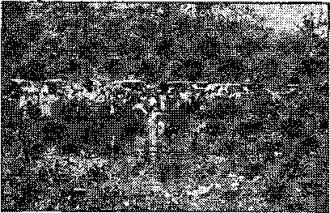Little Rock’s baptismal location. Beautiful, isn’t it?
tising”, “notis” and “arangements”, he is altogether askew in punctuation, but Brewer and the rest of the flock like it that way best.
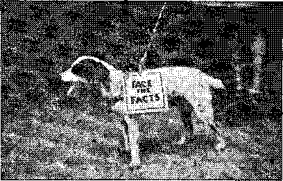Little Rock. Is this one of the dogs that ate Jezebel?
Ejected from the church, the convention held its baptisms in a paradise. But 30 or 40 immersions had been anticipated. Opposition raised the number to 70, and finally to 73. At the park ■where the immersions were actually held a large truck was draped with comforts and blankets and served as a dressing room for the sisters. The brothers went out to the “brush” and dressed. Baptismal robes were of every sort, bathing suits, nighties, pajamas, and in some instances brothers were baptized in the only shirt and pants they had. None were embarrassed, not even the timid, in the doing of God’s will.
The six “sandwich” parades, including the parade of Tilli the dog (guided by her little mistress) attracted much attention. The newspapers were far above the general level. The result was a great witness to God’s name. It is estimated that not less than 2,000 heard the greatest witness to God’s kingdom, and the most fearless denunciation of His enemies ever given in the earth.
One sound-car operator was taken in, and on the way to the station heard the message coming in on radios and filling stations all the way to town. Little Rock was not one of the greatest conventions in numbers, but in blessings from on high it was near the top.
For three weeks prior to the convention two sound trailers, equipped with large panels, advertising the lecture “Face the Facts”, combed the city. Special invitations were sent to 3,338 people of good will, the Chamber of Commerce mailing 750 of these to points outside of ItoA Angeles; and 375,000 handbills were distributed.
“Sandwich sign” paraders stormed the city, and were in progress continuously except during meetings. Groups of ten to fifteen publishers were everywhere throughout the business section. An officer in a downtown section stopped one group and escorted them half a block to a call box. There he asked his superior officer what he should do, and Avas told, aYou cannot do anything with these people: it is unconstitutional/’ Another officer waved his hand to a group and shouted, “God bless you all.”
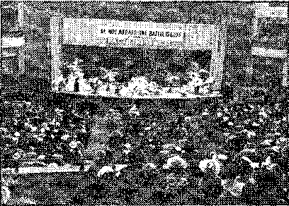The Trinity Auditorium, Los Angeles. It was packed.
One irate, woman shook her finger at a pa-rader and said, “'Don’t you know Judge Rutherford was in jail eight years for murder?” The poor woman had him confused with the old reprobate that blessed Mussolini’s murders in Ethiopia and Franco’s murders in Spain.
Fifty newspapers throughout California were served with news of the convention, and many of them carried the readers.
Special attention was paid to getting the people of good will to attend the Saturday lecture, and the auditorium was filled to overflowing. The reception was clear and distinct, and as the audience listened to the message dealing directly with the Jonadabs and their part in the Kingdom,.tears of joy were in many eyes. The common expression at the conclusion of the lecture, to be heard everywhere, was, il surely know now where I stand/ Many were heard to say, T guess I have been asleep, because I have not taken part in the service, but from now on my life is devoted entirely to Jehovah in the proclamation of the Kingdom message/ .
Vatican City anarchists did their best to prevent the great convention held in. the Lyceum
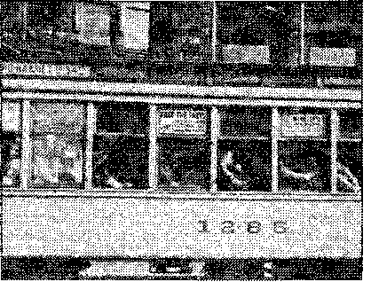Minneapolis used streetcar advertising, inside and outside
Theatre, Minneapolis, September 9-11; but all to no avail. Ttventy-two “sandwich” parades, 1,500 personal letters to the interested, hundreds of automobile streamers, tens of thousands of handbills, street-car advertising, billboards and placards made the lecture “Face the Facts” the talk of the Twin Cities. Stomach trouble of the nursemaids of the Hierarchy (the newspapers) made it impossible for them to do anything to assist in the good work. Most people realize that the newspapers have had their day. Anyway, they have.
A woman called at the Iris cafe prior to the convention stating that she represented 25,000 Catholic women (How they do love to strut that silly lineI) and that if the Iris cafe did not take Judge Rutherford’s sign out of the window they would boycott the cafe. The Iris kept the sign in the window and Sunday was one of its biggest days.
A man called up the Lyceum management to tell them Judge Rutherford had been kicked off of every radio station in the country, and was told that over 100 radio stations would carry the Sunday broadcast, He gulped a gulp.
A woman called and said her Arch Bish Hop had done his best to keep Judge Rutherford from saying anything by radio or otherwise in the Twin Cities, and, besides, she represented 50,000 Catholic women. (Every time this lie is told the figures double automatically.) She was told it was just too bad but there was no way out of it. Then she suggested force, but was saddened that this was not possible, as the speaker would be some 5,000 miles away. She thought it ‘just too bad that Catholics had to put up advertising signs in the streetcars and theaters and bring in the talk by telephone. They should get together and do something, law or no law’. She was commiserated, and heaved with the heaves.
A man called up and advised that the auditorium be overheated so. as to make it unusable. He sorrowed with a great sorrow and moaned aloud. '
These telephone calls put Jehovah’s witnesses on their mettle and a thorough system of guards and patrols -was installed 'which kept the Arch Bish Hop’s anarchists at bay.
Two friendly cops at the Lyceum stated that if anybody started anything he would get the works.
Every available seat was taken, with many standing in the overflow meetings and in the first-floor lobby. The music stops. All is quiet! The main auditorium is brilliantly lighted. Entirely ^across the stage the theater’s beautiful curtains of royal color form a magnificent background for the glittering silver letters, invisibly suspended: ‘Be not afraid: the battle is God’s.’ The announcement from London! Hearts trip ■ The facts are indisputable ! Nearly 3,000 are facing them with joy. The Hierarchy hypocrites are made to drink their death 'warrant! Their hearts stop for a moment—the earnest of their everlasting portion.
It was apparent from the beginning of the convention arrangements tw’o months ago that “Official New Orleans” (meaning that particular part of the Roman Catholic Hierarchy that rules over New Orleans) was “against” our having a convention here. First “'Jerusalem Temple”, one of the most beautiful Masonic buildings in the South, was engaged, but those arrangements did not hold for very long after the influence of a certain “foreign power” w’ell known to Jehovah’s witnesses began to be brought against the management. Then the Scottish Rite Masonic Temple was engaged, but the same story was repeated. Henry Robinson, the grand secretary of Masonic Lodges in Louisiana, was quite instrumental in both of these defaults of contract.
. The search for a convention hall continued, and the Coliseum Arena, a building used for wrestling matches, etc., was engaged, and it appeared that this arrangement _would stick; but when, on Thursday, September 8. M'r. Jud-lin, of Peter Judlin, Inc. (from -whom the Coliseum was rented), was called ilpon with a check in final payment for the rent of the Coliseum, Mr. Judlin refused to accept the check, stating that he had to confer with certain city authorities before he could grant us final permission to use the building. However, Mr. Judlin assured us that he would not be intimidated by any threats made by city officials, but that he wanted to hear all the facts before he accepted final payment. It now appears that he was serving as a faithful tool of his “’church”, but at the time he gave every evidence of being interested in our having the Coliseum. .
So confident were' the witnesses that we would have the use of the Coliseum that they worked from about midnight Thursday night (a wrestling match was. held in the Coliseum early Thursday night) until nearly dawn in preparing for the opening of the convention, and two of the witnesses stayed in the building as watchmen during the rest of the night. However, these witnesses were ejected very early in the morning, and the building locked up by the caretaker, who stated that he had orders from Mr. Judlin that no one was to enter the building until further notice was given.
Nine o’clock Friday morning came and still we were unable to interview Mr. Judlin; so the workers were sent into the field from the meeting hall of the local company of Jehovah’s witnesses, and. instructed to report back to the hall at one o’clock for further instructions. Mr. Judlin stayed in “conference” with the “city fathers” until about noon, and then his attorney notified our attorney that on this very morning Mr. Judlin had received a letter from the city architect’s office condemning the Coliseum, and advising him not to rent it 'to anyone until an inspection could be made. However, the attorney stated that Mr. Judlin. was agreeable to our using the building if the city wouldn’t interfere, and was willing to meet us at the Coliseum and open it up for us.
Nice work! It took them ah morning to figure out bow to free Mr. Judiin (J any habUHy. and yet dose up the bad to us, bat tiwy really made a neat job of ir. Of course, the police were down at the Coliseum and took charge as soon as it was opened, miming even to ahow two men to go in and uei some ot our convention supplies which had nne srereo there rhe night before. An effort was made to secure the release of our supplies, but rhe proper authorities top ml it convenient to be out of reach
It was now 1 p.m.; so were sent to look for another hall, and succeeded in getting the W.O.W. hall for Friday afternoon and evening, and tentative arrangements were made to use this hall for Saturday •and Sunday, but these arrangements later fell through. So the first session of the convention was ’opened somewhat late, but was attended by about 150.
Apparently the police didn’t find, out where cur meeting place was in time to get there for the afternoon session, but they came in all their glory to the evening session. They even brought along a patrol wagon, and a.truck for. towing in cars, and one of the officers, when he learned that Judge Eutherford is the president of the Society, phoned the station andf asked for another detachment of officers, because “This is Judge Eutherford and his crowd”. Apparently his request was granted; for the officers came in large numbers. Amusing was the fact that one of the officers wanted to talk to Judge Eutherford in person.
One McNamara, a police lieutenant who seemed to be more or less in charge of the police display, told one of the witnesses that if any speaker made any statement which he (McNamara) construed as an attack on any religion, or an attempt to incite others against any religious or other organization,' he would personally be responsible for the arrest of the speaker. If such, quality is known to him, McNamara must have felt ashamed as he sat through the exposition of Isaiah 60: 17, which had been prepared for the conventioners for that session. .
It became apparent quite early Friday night that we wouldn’t- be able to use the W.O.W. hall .for the Saturday and Sunday sessions of the convention; so two . witnesses were again sent out to hunt for an auditorium. Jehovah apparently blessed their efforts; for they found the official body of the Order of Druids sitting in session, and signed an agreement with, them for the use of their hall for Saturday and Sunday. But the agreement regarding bringing in the telephone line for Saturday’s and Sunday’s lecture was only a verbal one, and so the Druids, after the police conferred -with them on Saturday, held up their hands in- holy horror at the thought of bringing. into their hall a speech from the telephone company’s lines. So a shortwave radio was installed in the building, and Judge Rutherford’s Saturday .talk was heard in that 'way. Reception was very good, most of the talk coming in so that it could be understood perfectly.
The chairman of the convention, and the assistant chairman, were called into the conference with-the police and the representative of the Druids’ organization and informed by Me-Namara, of the police department, that they -didn’t want Jehovah’s witnesses to have a con- . vention in New Orleans and that they would cause cancellation of the lease on any building that we could obtain. When asked for a reason for their taking that position, they refused to talk, simply stating that they were not there for the purpose of argument. Thus the lease for Sunday for the Druids’ home was canceled.
At the Society’s suggestion, arrangements were made to get a, place outside the city, and a race-track grandstand was arranged for about 7 p.m. Saturday evening. This place was outside the city of New7 Orleans, and in another county (or parish, as they are called here) as well, but so efficient was the espionage system of the Hierarchy here that by 6 a.m. Sunday the sheriff of Jefferson parish (in which the race track was located) called up the man who had rented it to us, and gave orders that we should not be permitted to use it.
An effort was made to get an order restraining the sheriff from so doing, but there wasn’t time to get all that done before the lecture; so finally arrangements were made with a lady in the city who is an honest Catholic, and' who wanted to hear the lecture, to use her back yard. One of the pioneers has had his trailer in this lady’s yard for some weeks, and she knew that we were sincere, honest people., and that our work is done with, the view of pointing out to the people the only way of escape from the ter- ■ rible conditions that the entire world now faces.
Arrangements were made with the telephone company and their line was brought in and connected with our equipment. Our advertising, what little advertising material we had left, was changed to show the proper address, and a number of witnesses were sent out with “sandwich signs” showing where Judge Rutherford’s lecture “Tage the Facts” would be given:
As soon as the police found where the meeting was to be, they again came out in all their glory. This time they brought out two patrol wagons, and many’ armed men, etc. They got our landlady out and tried to threaten her and make her break her contract with us, but she refused'to do so, and insisted that we be permitted to hold our meeting there.
Then McNamara appeared on the scene, and announced that as soon as the program started the police would cut the wires, and he gave orders to his men to shoot anyone who attempted to do anything about it. Then addressing the assembled crowd, he said, (<I sincerely hope that we don’t have any bloodshed here this afternoon.” As soon as the first sound came through the speakers McNamara cut the main telephone line, and his men reached for their guns, and perhaps were disappointed that they did not get to use them; but, after all, this was an assembly of Christian people and, since it was pouring rain and the shelter was very meager, the meeting was dismissed.
Perfect obedience to instructions made perfect co-ordination of all departments at Oakland, and the greatest witness. On Saturday and Sunday 115 cars brought 430 people to the auditorium, including aged, blind and poor who expressed utmost appreciation of this service to the Lord. In one instance a party of five called up 45 minutes before the lecture, expressing their disappointment that the car driver assigned to pick .them up had not appeared. Another driver was there in jig time, and their expressions of appreciation were really touching.
Oakland. Main entrance to the cafeteria; only a Hock away from the Municipal Auditorium. Here Jehovah’s witnesses served three meals a day to the publishers.
A young priest, who had read and enjoyed Light One and Two was present at the public lecture on “'Face the Facts”. Monday morning he came to the witness -who had helped him
Oakland “sandwich sign” parade a mile long
to get a start in present truth, and said: "I have come to say goodbye. My heavenly Father knows my heart. I never wanted to be a priest. My parents insisted that I be one. I am going away,. leaving a letter of resignation for the bishop.
You know the church, what it means if they find me. So I wall disappear—-somewhere.”
At Omaha Jehovah’s witnesses have the backing of the wealthiest livestock owner (Psalm 50: 10) and are privileged to draw on his account at any time; so they borrowed $325 to finance the convention and, when all bills were paid, had $100 left over toward defraying line expenses.
They had to use an auditorium that was built while acoustics was in its infancy, but got the best results out of it ever obtained beneath its roof.
The chamber of commerce, after a preliminary cordial welcome, suddenly recalled their Moabite ancestry and expressed a desire to see Watch Tower literature, so that they could submit it to the inhabitants of Mount Seir for censorship. Told where they could go, they went. Before going they feebly said that they just could not get the Omaha papers to give the convention any publicity, but they would try, which meant that they would tip the papers off to be quiet. For the most part the papers meekly submitted to the hobnailed shoes resting upon their -windpipes. They hardly cheeped.
Arrangements were made to advertise “Face the Facts” on front and rear of 210 streetcars and buses, but when the general manager of the streetcar system found some wholesome truths might be told about the Rbnlap||fiei|| archy, he folded up like a punctured accordeon.
The Roman Catholic mayor of Omaha would have been oh so glad to grant a temporary permit for operation of sound ears, but just couldn’t "break the ordinance for anyone”. When his attention was gently called to the fact that amusement park men constantly fun all over the city with their sound car, playing tunes and making announcements, and it seemed a little discriminating that no spot announcements might be made of the greatest convention of Christian people ever to assemble together, he gave the only argument a Catholic politician ever gives when his bluff is called. He got mad.
Arrangements had been made with the YMCA for the use' of their indoor pool for immersion purposes, but when these inhabitants of Mount Seir found how things were going they served notice that, for reasons best known to themselves, Jehovah’s witnesses could go elsewhere; so they went to a bathing beach instead.
Many of the public had been poisoned mentally by America’s official poisoners and would not rent, rooms to Jehovah’s witnesses. A Catholic lumber dealer was so eager to be mean that he wanted more rent for a load of lumber than it could be bought for outright elsewhere.
Five minutes before the broadcast came in from London the telephone company announced that static was so great that tests could not be made ; but in the next five minutes conditions so changed that the entire lecture came through clear as a bell. Auditorium officials said they had never, in all their born days, seen anything move so smoothly as the Omaha convention.
Police were friendly and efficient. The people from whom crockery and silverware, were rented stated that they had never before received their stock back so clean and undamaged.
The elegant and capacious Municipal Auditorium was used to house the Philadelphia convention, yet even here Catholic Action showed its ugly and impudent face when two cops came on Sunday morning and wahted to know if a license had been obtained for this "affair”. They were informed that the city itself had leased this property for the holding of this Christian assembly. Then they were asked if they had been assigned to this building, and, on answering in the negative, they were taken by the arm and escorted to the door. Such crust*
While the advertising campaign was on, a cop at the corner of Market and 15th streets used profanity, which is against the law in the State of Pennsylvania, and wanted to know of a witness what he was doing. A citizen was so incensed at the act of this officer in using profanity, and subsequently arresting the witness, that he voluntarily offered his name and address in case the need arose. But it did not arise: at the police headquarters the witness was not detained.
One cop detailed for duty at the convention said, "We had reports about you people, but your actions belie those reports.” Another one said, "I don’t know what it is all about, but I do know that religion is a racket.” .
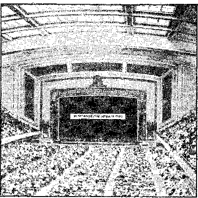Philadelphia. The. Municipal Auditorium. Nearly 7,000 were in here to hear “Face the Facts”.
The Philadelphia papers showed their meek submission to Cardinal Dougherty by remaining silent as the tomb about one of the most widely advertised conventions ever held in the "City of Brotherly Love”. "Sandwich” paraders were in such profusion everywhere that they could not be overlooked, but the newspapers with the Hierarchy’s hook in their jatvs dared not speak; and nobody cared whether they did or not. A dog that cannot bark is not worth its feed.
"Everything went over swell. You would have thought it was a local station. They certainly got the breaks on the radio !” Tony, ,con-•trol-board man back-stage, was telephoning a report on reception of "Face the Facts”. He spoke truly. There in the operator’s protective cage, through the loudspeaker of the control panel, one heard every word of Judge Euther-ford distinctly, despite a couple of periods of crackling or fluctuation of volume occasionally. The immense stage depth behind the curtains was filled with sound. Out in front 24 loudspeakers flooded the tremendous auditorium, as 6,839 persons sat spellbound by the electrifying words they were' hearing. Several times they broke out in applause, even when the London audience was not heard to applaud. They roared out their endorsement of the Resolution, and unabashed rose and amenned their approval of what Judge ■ Rutherford said of Hierarchy and allies. So moved, so impressed, were they that on departing the public took 1,150 copies of the new booklet Warning as offered by the ushers, besides getting additional literature at the hook-display tables in the’ foyer. Their free-will offerings dropped while passing by contribution boxes, and, totaling $235.39, bespoke their deep appreciation.
At 3 :• 58 p.m., while the London chairman was making his closing announcement, suddenly, without warning the lights went out in the operator’s cage. A snap on the public-address system told the operators that the public-address system was now operating on an emergency circuit. A circuit breaker or renewable fuse had come loose, broke the circuit, extinguished the lights, and threw on an emergency circuit.
This was the first time such, a failure ever occurred on the Convention Hall sound equipment since its installation, in 1936, by the Democratic Party, when they obtained use of the Hall for their presidential convention and renominated Franklin Deficit. Fearing that possibly the Republicans might do "dirty work” and cut the wires, Cardinal Dougherty’s political party played safe by installing an emergency circuit. Jehovah’s witnesses were, two years later, the first ones to get the benefit of this provision of the New Dealers.
During the speech one Catholic lady inside held up a crucifix on high during the whole hour, apparently in malediction or as a charm against the effect of Judge Rutherford’s words.
Shortly before 3 p.m. a group of about 150 .Catholics massed across the street before Convention Hall. Observers did not know their identity or what form of Catholic Action they planned. Some Catholics entered the auditorium, pockets bulging with "Father” Felix’s literature. After "'Face the Facts” they came out and distributed it outdoors to the departing public.
Some of Jehovah’s witnesses, leaving the auditorium improperly before the lecture "Violence”, overlooked the Bible warning: "I will take heed to my ways, that I sin not with my tongue: I will keep my mouth with a bridle, while the wicked is before rne.” (Psalm 39:1) They let themselves be drawn into argument with spokesmen of the Catholic Action group outside.
Another group surged into the foyer and surrounded a display booth, to start controversy. This group was dispersed, thus permitting the public to observe the book display and come and get literature. Happily the great public meeting passed off without any scenes of violence. Many conventioners brought newly interested Phila.delphia.ns to this public, lecture.
A Jew thought Jehovah’s witnesses were on strike against Jehovah. ' .
A man who heard "Relief” wanted, to know why Judge Rutherford did not come out in the open and name the foreign power. He heard "Resolution” and was content. •
.ThosMto be immersed grew steadily in number from 86 on Saturday to 160 at the last minute. The immersion procession got broken in two, and pursued two different routes to the pool, thus more widely advertising "Face the Facts”. Those immersed included men and women, white and colored, Jew and Greek, from 12 to 80 years of age, some crippled, some feeble. One Jew immersed is selling his business and will go into the pioneer service at once.
Considerable opposition to this convention was encountered in advance. The Hierarchy tried, to induce the committee in charge of the Syria Mosque to cancel the contract. These men became quite fearful. However, after two conferences, at which they freely admitted that there was no opposition from Protestants or other organizations but all opposition came from Catholics, they decided to co-operate, and did co-operate excellently.
One Catholic employer scolded a girl employee one hour and fifteen minutes because she is one of Jehovah’s witnesses. He demanded to know where all the money comes from.
The other source of opposition was from the American Legion. There were 25 highway signs advertising the public meeting, distributed at strategic points. One of these was at a particularly prominent point and the Legion brought pressure to bear upon the local authorities to move it, even to the extent of issuing subpoenas for the arrest of the witnesses whom they thought responsible, only to find when they "got their man” that he did not know anything about it. The last heard was that they were still looking for Hessler. Saturday afternoon the American Legion took the law into their own hands and pulled down this sign themselves. Anarchists!
The convention was advertised very thoroughly —300,000 leaflets distributed, 25 highway signs, 300 in “sandwich sign” parades Friday, Saturday and Sunday, and an automobile parade of
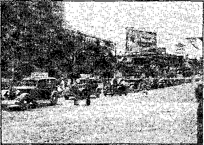Pittsburgh. 225 automobiles doing advertising
225 cars on a ten-mile route under police escort. By careful maneuvering the witnesses were enabled to get a permit for this parade, but apparently the Lord desired a more extensive parade. To have the whole parade pass a given spot took about 30 to 35 minutes. In the busy ' section of the city this interfered with traffic considerably. As a result police officials took it upon themselves to break the parade while going through the business section, to let traffic through. At each break the parade got lost, could not find the ones that had gone on ahead, and the result was four parades varying in size from 25 to 100 cars going through different sections of the city. All signs on these cars were uniform and made a splendid witness.
The custodian of the Mosque said, “These . people are clean inside and out.’'’ .
An observer of the downtown automobile parade was heard to say, “This is the greatest advertising demonstration ever staged in Pittsburgh.”
The attendance at the meetings was excellent. There were 1,800 out for Judge Rutherford’s talk Saturday, and 3,800 at his talk Sunday. Of these 3,800, about 1,500 were public,, aver 500 of whom were brought in by the witnesses’ going back and calling on interested people, with automobiles. This proved to be a very effective arrangement.
A very effective display of the literature was set up in-the lobby, and a large sign containing the year’s text was made to go across the front of the stage. : : j < << ,
Sound. The auditorium’s sound equipment is excellent. It was possible for the audience, regardless of where they sat, to hear clearly and distinctly every word that was uttered. The reception of Judge Butherford’s speeches was excellent. Saturday there was a, slight fading, but this in no wise interfered with the reception, which was clear and powerful throughout. Sunday, for the first six minutes, there were line noises that were a little disconcerting. These were eliminated. At both meetings Judge Rutherford could be heard as distinctly as if he had been speaking from the platform of the local auditorium.
Quite a percentage of the public in attendance were Catholics. All of them, without exception, acclaimed Judge Rutherford’s address with enthusiasm, fully concurring in everything he said. There was quite a sprinkling of college students at the meeting, also, who manifested very deep interest. Throughout both addresses the audience was held spellbound from the beginning, not a movement in the hall, everybody paying very close attention. Saturday afternoon’s talk was particularly acclaimed by the Jonadabs present, which opened up to them the Lord’s Kingdom arrangement and their great privilege in connection therewith as nothing else has done to date.
' A minister, deeply impressed by a witness, tore down his sign “Reverend”, stating he would never allow himself to be called by that name again.
At the conclusion of Judge Rutherford’s public talk the Warning booklet was given away free to any who wanted it, and contribution boxes were distributed over the place for any who wanted to contribute. The contributions amounted to slightly over 9c per Warning booklet; 1,200 Warning distributed.
There w’ere 68 immersed, at this convention.
A permit for the use of the trailer camp in one of Pittsburgh’s exclusive parks was obtained. The setting was ideal and the witnesses there were well satisfied.
Rochester’s greatest witness to Jehovah came about through the Roman Hierarchy’s stupidity. See the next page for samples of publicity that brought out 3,500 people to the public lec-iure and made it the talk of the whole eiiy. The float, rhe silk screen signs on am os, the .200 "‘sandwich sign” paraders. and six sound ears helped the Boman Hierarchy to make a huge success of the convention.
In the effmt io make it appear that the Hierarchy, the American Legion and the D.A.R. are America’s greatest patriots, and for that reason Rochester must not have a convention of Jehovah’s witnesses anywhere in the city, the judicial slap across his chops must have hurt the bishop more than anything else in his career. ;
Rooms were canceled., all auditoriums were refused, the witnesses had to meet in three places until Sunday, and were put to great inconvenience ; but by court order the city’s best auditorium was opened to them Sunday all day, everybody in the city knew about it, and was talking about it, and in western New York the Hierarchy got a black eye that will never be forgotten.
Protestant ministers offered their churches and telephoned their best wishes. World War veterans expressed their indignation at being misrepresented by the drafted patriots that never got within miles of the firing lines.
A pioneer, long in the service, stated that, because of the direct manifestation of Jehovah’s favor to His people, as shown at Rochester, he had received more blessings in the three clays of the convention than in all the rest of his life put together.
As “Face the Facts” came to the conven-tioners and to the public assembled in the Convention Hall many were literally moved to tears of joy. ‘ .
In the back of Convention Hall, on the grounds next to the building, a sound car was operated with its four horns directed across the street and the park on the other side, and incidentally the large Catholic institution of St. Mary’s, occupying most of the block, was on the receiving end of “Face the ‘Facts”.
A policeman in uniform spent most of the hour listening to “Face the Facts” while seated in an automobile directly underneath the horns of the sound car. An effort was made to get him to stop the sound car, but he refused. Following the lecture he stated that he had enjoyed the talk, is in harmony with the work, and took some literature.
During the lecture, eight men were seen to come out of the Catholic institution across the way. They were in their shirt sleeves and struck

Close up of an actual immersion. Rochester convention
out toward the sound car, rolling their sleeves as they came. When they got near they spotted the policeman, turned around the end of the building and disappeared.
A Mr. Murphy, secretary to Commissioner McFarlin (chambermaid of the Hierarchy in Rochester) and himself a most rabid and unreasoning opposer of Jehovah’s witnesses and their message, got an earful as he sat on the sidewalk directly across the street from the sound car and listened to the lecture “Face the Facts”. .
A witness parked his car near- a Catholic church, as was his right. The priest telephoned the police, whereupon the chief of police stated that the witness was within his rights and did not have to move. This backbone of the chief was so much appreciated by .the witness that he-moved anyway. . . '
On Sunday an accordeon band of twenty professional artists entertained the entire audience half an hour, without charge, prior to the lecture.
The reception of Sunday’s talk was the best transatlantic service ever received in Rochester, though the test program, two minutes before the talk started, was very poor.
Eady this week, Jehova’s Witnesses leased Convention Hall for a convention. Protest was made by the Rev. John Randall, director of the Society for the Propagation of the Faith, who claimed the group fosters religious strife. Commerce Commissioner MacFarlin ordered the lease cancelled on the ground the group planned io use the ^hali for purposes other than those stated when the lease was granted.
Supreme Court 'Justice John Van Voorhis today ordered the city to permit the Watch Tower Bible & Tract Society to use Convention Hall for meetings today arrd tomorrow.
Justice . Van Voorhis ruled the *• city’s contention, that the lease provided for a “Christian convention” and that the society’s advertising was for a mass meeting, had jibt been sustained. He said, the word '’’convention” was faroad en'ough to cover such a meeting' as the society- planned.
Bishop James E. Kearney regrets the “unfortunate publicity” Which followed efforts of the Bev. John Randall, director of the Catholic. Society for the Propagation of ‘Faith, to prevent Jehovah’s Witnesses from meeting ia City-owned Convention ‘Hall
The leader of the Rochester Catholic Diocese voiced his regret yesterday at the dedication of the new St. Charles Borromeo School, 3003 Dewey, replacing the structure destroyed by fire last April.
In his address Bishop Kearney deplored the “unfortunate publicity about those who .have come into our city to preach a gospel of re
ligious hatred.”
EADERS FORUM
Letters to The Times-Union
Editor, The Titnes-V®im
ROCHESTER seems to be going
Jersey City and Mayor Haig one better, when it refuses an hon
orable citizen and & former judge the right to speak at Convention Hall. If this is any criterion, the
country seems to be going fascist much faster than most of us even
dare to think ©f.
In their attempts to suppress the truth, certain selfish interests Resort to un-American deeds arid
practices. Such was recently manifested in our community.
Jehovah’s Witnesses do not
‘“preach a. gospel of religious hatred,” as a spokesman of the Catholic Diocese of Rochester recently stated.
Thus he seeks to' belie Jehovah's Witnesses and the work they are commanded to perform. (See Matt-24:14, and Isa. 43:10-12.)
Those who seek truth today appreciate this work, for they-desire to know what Jehovah God is going to do about this crisis on earth at the present time, the like-of which has never been- encountered by humankind. (Isa, ®1:1. 2.>
“Jehovah’s W i t--n esses” went their several ways itapfiily today.
: Many of us only Know Judge Rutherford aa a radio speaker, and are not particularly interested in him and his Jehovah’s Witnesses; but I believe they are a sincerely religious group and have a right to be heard. The attitude of the city government will be resented by thousands of Rochesterians who have a keener sense of freedom.
Rochester. PLEBEIAN.
Bishop No Lika da Light
It is said that the doers of evil hate the light and come not to it'Test their evil deeds be discovered. (John 3:20) When Bishop Kearney and the self-designated “Reverend” John Randall butted in with their un-American tactics on the Rochester convention they had much light turned on them. No wonder the bishop regrets the “unfortunate publicity”. It was so very unfortunate for them, dragging them, out in the open, exposing their inward corruption to view, taking off the veil of hypocritical pretense, and showing them up to all as frightened racketeers trying to dictate what can be listened to in Rochester. No one likes to be spanked, and it is especially embarrassing to be spanked where all may see and hear. The bishop and the reverend received a right royal judicial spanking from, the Supreme Court. Everyone saw and heard about it, and therefore they do so deeply deplore the “'unfortunate publicity”’ connected with it. It would have been much better for the bishop if the spanking had been done in the woodshed, where their wails would have-been muffled, and no one would have been the wiser. But handing it to them out in the open is not in accordance with, their code of spiritual progress and naturally their wails have grown louder and louder and the “unfortunate publicity” deplored with exceeding greatness.
Next time. Bishop, you and your reverends had better stay in your holds and draw the hold in after you. And be assured that even there Jehovah’s Executioner will locate you: “Though they dig into hell, thence shall mine hand take them; though they climb up to heaven, thence will I bring them down: and though they hide 'themselves in the top of Carmel, I will search and take them out thence.”—Amos 9: 2, 3.
Badly frightened by the Hierarchy, the Tacoma chamber of commerce and newspapers washed their hands of Jehovah’s witnesses as Pilate did. Tacoma is only 35 miles from Shaughnessy of Seattle. But the Tacoma Masons and Y.M.C.A. and Odd Fellows, too, showed themselves real Americans and could not do enough to make Jehovah’s witnesses feel at home in their magnificent Fellowship Hall, which was packed to capacity to hear two of the most remarkable addresses ever given in the world. The chamber of commerce missed a blessing; the Masons 'and Odd Fellows listened to the kdriG;, and liked 11 ei i.
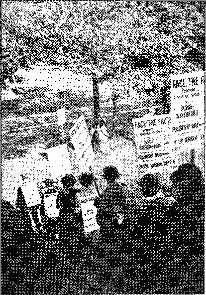Starting out on one of Tacoma’s “sandwich” parades
When fifty “sandwich sign” paraders patrolled the business section one nervous merchant thought he was being picketed. His anxious .countenance beamed with friendliness when he read “Face the Facts”. Another businessman asked one of the paraders, “How do you get a. bunch of people to humiliate themselves in this manner by carrying signs through the streets of Tacoma?” He was answered that it is earth’s greatest honor to get a., chance to do something to honor the name of the Most High God in a world where it has been so dishonored by the racket commonly known as “religion”. How strange the strange work ’
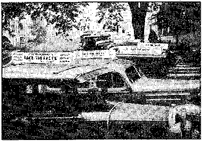Automobile signs advertising Tacoma convention
Friday morning each car driver had an ambition to locate one person of good will that he might bring to hear Judge Rutherford’s lectures Saturday and Sunday. On Saturday these cars brought in over 100, and on Sunday over 200 fine people of good will. The Seattle convention so stimulated interest in that city that a bus was chartered to bring 42 such persons to Tacoma, where they stayed all day Sunday-, many participating in all the activities of the day.
In one load taken out in the work were three that had never been out in the service previously.
Masonic Temple filled to its capacity. Tacoma
.During the public lecture, immensely enjoyed by the audience as a whole, two men of middle age were shocked at the idea of learning anything, so came out, dipped their hands in water in a drinking fount and crossed themselves,
muttering prayers to Dagon, the god of the Philistines. . ■
There was no opposition in Tacoma.
At Alexandria, Va., two nuns were overtaken by a “sandwich” parade, and, unknowni to themselves, led it for several blocks. When they tumbled to what was behind them they darted off down a side street. But something worse than that is after them.
Ritchie Coliseum, used by Washington, D. C., conventioners
Near the Catholic University was a parade of cars with the idea imported from London, spread all over the rear, that “Religion is a snare and a racket”. You should have seen the faces of the young priests when they saw7 this truth blazoned in front of them.
On the next to the last night of the great feast a witness was driving home with this sign on her car. She was forced to the side of the road, compelled to stop, and told she must remove the sign or be arrested. She talked the cop to a standstill and he promised to listen ■ to the lecture, “Face the Facts.”
Application was made to the police inspector to have a parade in the District of Columbia. When the request was refused it was taken over his head to the Corporation counsel, who stated there is no law7 against such a parade to advertise a lecture. The inspector then gave the permit and a police escort. Three car parades were held in Washington on Saturday, and one on Sunday morning, one in Baltimore Saturday, and one in Annapolis Sunday.. The police escort, in front of the charming statement that “Religion is a snare and a racket”, was a burly red-haired Irishman, who seemed greatly relieved w^hen the parade was over.
Newspapers played dead. Despite the fact that the auditorium was in Maryland, 1,400 persons attended the public lecture. The deaf and those needing transportation were specially cared for. A pioneer lost her husband and the Lost and Found department located him, but it fell down badly on an appeal for a safety pin. Washington people were glad to have Jehovah’s witnesses as guests, often at no cost. The conventioners went home greatly refreshed and their hearts filled with gratitude to Jehovah for the feast He provided for them, and with renewed determination to put forth even greater efforts to proclaim Jehovah’s kingdom.
A few of the 1,818 immersed in the United States on September 11
Toronto, meaning in the Huron Indian tongue “place of meeting”, great port on the northwest shore of Lake Ontario, witnessed an amazing assembly of Jehovah’s witnesses. They came from 600 miles north out of the wilder sections of Ontario, from the priest-ridden province of Quebec, and from the Maritime Provinces a thousand miles away on the Atlantic. Grateful that the Lord had brought them together from such distances to the honor of His name, intensive effort was put forth to torment the enemy and afford opportunity to the righteous to find the Lord’s provision for their safety. Although hundreds engaged in such details as cafeteria operation, wherein 5,000 meals were provided, and in the printing and manufacture of signs, and the unnumbered duties of taking care of the needs of several thousand delegates and more thousands of the interested public, besides these activities 1,066 witnesses reported field service. Great energy was required to achieve the 1,922 hours put in the door-to-door offer of literature, as most Of the time was re-
Toronto introduces a new method of advertising
Toronto baby carriages put to another good use
quired in advertising “Face the Facts”, for which the Maple Leaf Gardens, with a capacity of 16,000, had been secured. This event , was scheduled for a time when the National. Exhibition was showing at the city fair grounds, which was an added reason for the great audience of upward of ten thousand that heard the voice ■from across the sea speaking words from the Everlasting Father. '
t But the greater reason for this enormous gathering was the Lord’s blessing on a determined, spectacular, and voluminous advertising campaign. The report states: “Newspapers -were avoided. The responsibility for the advertising was accepted joyfully by the witnesses.” Let the people of the British Isles take note of how their Canadian cousins attacked this problem: Two thousand placards were used, 500 of which were put in the business district; 400 car signs, many as large as 16 Feet by one yard, became moving announcements; “sandwich” parades displayed signs in the prearranged order of “Come to”, “Maple Leaf Gardens, Sunday, Sept. 11, 3 p.m.,” “Why?” “'Hear Judge Rutherford,” and last, “'Face the Facts,” with the backs in -the reverse order, to catch the eye of the people both ways ; baby carriages were rigged with six-foot box-shaped signs bearing “'Face the Facts” on the sides and a large question mark in front. Besides this, 4,000 letters were written to interested people in Toronto, 180,000 folders were distributed in the metropolitan area, a sail boat was used to make announcements along the coast, and an airplane, equipped with splendid sound machine, for one hour did very clear heralding from the sky; but the peak of the great shout came when 115 cars with banners and sound apparatus, accompanied by a-police escort/paraded for two hours through the main thoroughfares!
Besides the ten thousand to eleven thousand people who listened enraptured to the great exposure, “Face the Facts,” the witnesses learned that stations WGR, Buffalo, and WJR, Detroit, would carry the talk, both of which stations can be heard all over Ontario, and these stations vrere given wide publicity. In ajl, Toronto did a whacking-good job of taking cate of the particular job at hand, and rejoiced that henceforth God’s people take the offensive in this warfare.
Ottawa, capital of the Dominion of Canada, was a scene of a fierce scrap with the enemy. While in the province.of Ontario, it adjoins the Catholic stronghold of Quebec, in which, as in Spain, the Hierarchy throttles liberty under a guise of fighting Communism. No other organization on earth has imposed on the liberality of the British, Canadian, and American governments to nourish a snake that will destroy the host which provides money, protection, and tolerance, in the manner in which the Roman Catholic Hierarchy has done this. In lands where there was once freedom for all they have been permitted to rear a cobra that merely awaits sufficient strength to kill its benefactors. Some who ask, “What can they do if they are in control?” have forgotten Torquemada, official in-quisitioner, who burned 10,0'0© “heretics” to death in agony. . “Oh, but they are different now,” they might add. Sure; in Spain they use machine guns, bayonets, and mutilation; in Ethiopia they “Christianize heretics” by the most approved methods of murder in vogue in. “Christendom”; in Germany the concentration camp, torture of the latest invention, and-“'bloodpurges” are found useful missionaries. In countries where the Hierarchy is not yet in complete control the use of organized mobs to break up peaceful meetings is a customary procedure; of which latter practice Ottawa was recently treated to a disgraceful example.
For many years the friends in Ottawa have made progress under much difficulty because the pope’s hirelings have ensconced themselves about the seat of the government with a view to getting in their death-grip. Consequently tension was high -when a small newspaper account informed the capital that Jehovah’s witnesses were coming. “Undoubtedly, too, that notice stirred the Hierarchy here to quick action/’ says the Messenger reporter. However, the great broadcast of Saturday was received successfully, even though effort had been made to cancel the lease of the Coliseum. Regarding this meeting, and as an example of diligent attention to Kingdom interests, the following is noted: An exceedingly alert witness took down the afternoon lecture in shorthand, transcribed it and trans, lated it into French, to be delivered that evening to many who had formerly been Quebec Catholics and understood only French.
Although the Hierarchy interfered with the operation of the sound truck and engaged hood-■ lums to tear up posters and molest workers, they seemed to mass their chief attack on the public meeting Sunday. This was their scheme throughout the whole world, but it was more overt, more arrogantly bragged about, and found more willing tools in the police, here, and in ■ New Orleans, than elsewhere.
Although the air brooded peril, nothing happened until ten minutes before the beginning of ‘'‘Face the Facts”, scheduled for three o’clock. At this point the account of the Messenger reporter is quoted: ■
“'Rumor had it that the St. Patrick’s College boys were primed to wreck the meeting; others, that an Eastview French gang were involved.
‘If that meeting is permitted to go on, there is likely to be violence/ said a radio preacher. Another later statement, from a boy in the gang, was to the effect that the Roman Catholic church? knew of the broadcast and was taking ||teps in the various cities preparing for it. ™
Ottawa. All eyes were turned toward the Coliseum door and sound car when rioters were acting.
“About 2: 50 an organized gang of some 25 boys, aged from 17 to 25, walked in, determinedly but not noisily. They sat at the back of the Coliseum for a few minutes, then, in response to a signal, moved to the nearest platform. The chairman advised an usher to telephone for six police officers. Another convention servant was directed to send as many husky brethren to the troublesome section as possible. This was done quietly and, doubtless, the boys scarcely realized it was being done. Other friends were advised to get cameras ready to take photos of any trouble.
Ottawa. Three signs out of a dozen destroyed by rioters
“When the broadcast began, the young Catholic-Fascists cheered, shouted, stamped their feet, moved around, and it looked as if a, mass attack on the platform and sound equipment was imminent. A detachment of conventioners was sent from underneath the platform, by the chairman, and the gang realized they were out-maneuvered, and left the building.
“Going by the side entrance, they passed the carpenter shop, where, picking up about twenty sticks cut for signs, they marched outside. Evidently they retreated a block away, held further conference, and returned. Meanwhile delegates outside formed a wall in front of the sound car which was broadcasting the speech at the street entrance, and headed off an intended attack on it. Hard green tomatoes were thrown by the rioters, hitting two sisters, and another witness had his scalp cut open, while one was beaten over the head with a stick. A woman, a stranger to the assembly, had a stick brandished within a foot of her head, and almost * fainted?’
In the meantime, where were the police? If the call had been to arrest a poor drunk trying futilely to forget his sorrows they would have already pounced; but when it came to exhibiting some real manhood by preserving law and order in the face of such a strong violator as the Catholic-Fascists they preferred to break their oath .to the people. Why ? It might prove dangerous to act like men. The account continues to the everlasting disgrace of the country of the Royal Northwest Mounted?
“'The police seemed only to come finally in response to several calls. We are wondering" ■whether the Catholic desk sergeant purposely neglected his dutf. The calls were put in before three o’clock, and only one policeman had arrived almost an hour later; then, before the other police who straggled in had restrained the mobsters, the meeting was over. The chairman asked for the arrest of' the ringleaders, but two policemen refused 1 Thereupon we asked the police at least to secure their names for identification purposes.
“After the gang had returned three times to the Coliseum in ever-increasing numbers, some fourteen of them were taken to the police station; their names and addresses were taken and they were then liberated. Some of the radicals were heard to say: “'They won’t arrest us. They will protect us.” “'Good old Quebec. The police are for us.” Seemingly they felt confident and impudent beyond bounds, as, no doubt, a conspiracy with the police had already been arranged, and the police dealt mildly with them. ' One stranger had two Warning booklets taken from his pocket. He protested to the thief in the face of a police officer and the officer did nothing •
“Throughout the whole afternoon we were menaced by a gang which finally, late in the night, reached the proportions of 300. Small groups frequently entered the hall, but were firmly told to leave. About five o’clock no arrests had been made. An extra squad of police merely held them off. We had supper, and the gang, reinforced in numbers, returned.
“While the evening Tower study was in progress, Aidermen McMillan and Sloan, in reponse to calls from citizens, came to the Coliseum, and, after introducing themselves to .the chairman and others, sized up the situation and acted quickly. Aiderman McMillan approached the first policeman he saw, asked for the senior patrolman, and said: *T am Aiderman McMillan. I command you to clear this ground immediately. Arrest any man who resists you or refuses to go. And I don’t care how many arrests you have to make to do it?
“'The gang left the grounds but congregated on the opposite side of the street. Rough-house methods became necessary and some of the boys were clubbed by the police. Indignant citizens were heard to complain of the treatment accorded Jehovah’s witnesses while in peaceable assembly. Newspaper reports of it appeared— all fair. The Montreal Gazette reported it. Mayor Lewis, of Ottawa, is asking for an investigation ; and freedom-loving people, wdrether Catholic or otherwise, are asked to protest against such befouling methods by gangsters and police in combine at the Canadian capital.”
An honest citizen may do little but protest, ' but he may readily understand why Jehovah will shortly sweep from the face of the earth an organization which would employ such murderous tactics while claiming to be representatives of His Son, Christ Jesus. The honor of the name of the Lord is involved, and their destruction draweth nigh!
It is noteworthy that on. October 2, three weeks later, a line was run through to an auditorium in Ottawa and many hundreds heard the second exposure of the Roman invasion, “Fascism: or Freedom,” Judge Rutherford’s broadcast from New York, and this was heard without interference!
GANGSTERS AND SOME OF THEIR VANDALISM
FOR FREEDOM OF SPEECH?
Sir,—-“Ottawa’s mayor aroused by riot; will stand for no padlock on religious meetings,” was the heading on a Canadian Press despatch which appeared on September 13th in The Montreal Star.
The story had to do with a mob of two hundred Ottawa hoodlums, who broke up a meeting in the Coliseum last Sunday of the Witnesses of Jehovah, otherwise known as the International Bible Students’ Association.
To these Christian mobsters, the name of “Coliseum” suggested nothing that would act as a deterrent to their savage attack upon these inoffensive citizens. I hold no brief for the Witnesses of Jehovah, of whom I know next to nothing, but I hate, with an abiding hatred, persecution. These unfortunate people are subjected to enough of that in this Province of Quebec, where even parsons who preach about a personal interpretation of the Bible raise not a voice in defence of the Witnesses of Jehovah for their interpretation of the Holy Book according to their lights.
When, I ask, will this Province of Quebec cease its inquisitorial hounding of the -International Bible Students’ Association ? It is time that it began to follow the most praiseworthy example of Mayor Stanley Lewis, of Ottawa, whom your paper quotes as follows: “I have always stood for free speech and tolerance in religion as well as in other things, and I will stand no padlock in the city of Ottawa.” W. E.. Collier.
RELIGIOUS MEETING • ■ -RIOT IS DEPLORED
Ottawa, Sept. 14—(C.P.)-— At a meeting yesterday the Ottawa Presbytery of the United Church recorded “regret and shame” at disturbances which interfered with the convention of the Ottawa Company of the Witnesses of Jehovah at the Coliseum here last Sunday.
“It is deeply regretful that such a thing could happen,” said Rev. Russell McGillivray, pastor of the Southminister Church here, who moved the disapproval be recorded. The disturbances occurred when some 200 youths attempted to break up the meeting, -which was concluding its three-day convention. ’
Police are serving summonses on 14 of the youths who were taken to the police station for questioning. They will appear in court on charges of disorderly conduct.
No appreciable opposition was manifested in Winnipeg, great city of the Canadian plains and wheat belt. As the witnesses assembled at this point evidenced especial ability at convention organization, their arrangements are described. In explanation for those who have never attended one, it should be explained that a convention of Jehovah’s witnesses is a perfectly appointed machine. The responsibilities and duties are divided and assigned with branch captains, and all function in unity under the convention chairman. Besides the regular witness work with sound car, phonograph and literature, in which all engage, assignments were given for such duties as tabulation and counting, registration, ushering, room accommodations, territory and literature apportioned, watchmen, traffic officers to assist police, advertising in which all participated, cafeteria, trailer camp, check room, hospital and nursery, and executive or general office. These departments worked hard: for example, the hospital treated more than 200 patients for minor complaints, and the cafeteria served more than 3,000 meals. . .
This city had a wonderful audience to hear
the lecture “Face the Facts” and the transcription speech following, entitled “Violence”. A motorcycle section of the police at the head of many cars and several hundred brethren in parade had been a feature of the advertising of the lecture. A tremendous crowd which did not quite fill the Amphitheatre, capacity 7,000, was a result. This convention had been a joyful occasion, and all went home stimulated for the war of God. *
Calgary, thriving railway, •farming and cattle center, in southern Alberta, lies in a natural bowl over three thousand feet above sea level, and in sight of the Canadian Rockies but eighty miles distant. A climate which would otherwise be rigorous, is tempered by the warm Chinook winds which, thaw many a,blizzard. Judge Rutherford once personally addressed a large : and representative audience in Calgary. ?■ ' ■
From 400 miles around the witnesses gathered in Calgary for the-convention. The Messenger reporter states : “All the multitude of details and preparations for this most successful convention focused on the main events, the. two great messages from London. The Al Azhar.
Calgary. The crowd assembled for the public meeting, and outside view of the Temple
Temple, with a capacity of 1,400, had been secured both for the broadcasts and for assembly headquarters. Even under the strenuous work of advertising, the query ‘Will the reception be good ?’ never left the minds of the witnesses. Then, at twelve noon the first great broadcast reached this Canadian metropolis, eight hours behind Greenwich time. The remnant, the 'strangers', and those who thirsted for righteousness listened with bated breath. Afterward, while still aglow from this revelation of Jehovah’s purposes, the assembly went forth to give further announcement of ’Face the Facts’. Again the history of these conventions was repeated and the Temple was packed, and the message came with great clarity. All felt that they were participating in the forceful declarations of the ‘judgments written’ then going forth throughout all the earth.” •
Vancouver, British Columbia, is important as a port for passenger travel and freight shipments both from England and from Canada to the Smith Seas. z\usira'.ia and Xew Zealand. It is also within striking distance of Alaska and the Klondike. Incidentally, one of the oldest members of a “sandwich” parade staged by Jehovah’s witnesses assembled in this one of their convention cities was an eighty-year-old veteran of the Klondike gold rush of ’98. In the same parade was a little boy of nine. Advertising went forth in the usual enthusiastic way and an auditorium seating 2,500 people with exceptional acoustical qualities was advertised for the lecture “Face the Facts”, Free transportation was offered to all requiring it. Thousands of handbills, large window cards, and other means, hereinbefore described, were used to inform the people. As the Canadian Pacific Exhibition was then in progress, even greater crowds learned of the lecture “Face the Facts”, to be given by Judge Rutherford.
In one of the parades a little boy was stopped by a bystander who looked on both his front and his back, saw the words “Face the Facts” and remarked: “If you knew what you were doing you would not be in this.” The little witness for Jehovah replied: “If you knew what vou wpre doing you would be doing what I am.”
Vancouver. This auditorium was crowded to the doors; large overflow outside, all as a result of the unique advertising by J w’s.
The Vancouver ’‘sandwich” parade. A few of the 200 that swarmed along the streets, into the stores, market places, streetcars, everywhere
The Society’s witnessing boat "The Kingdom”, with its crew, took part in the advertising. Her customary work, operating in some of the roughest waters of the world, visiting lighthouses, isolated settlements, Indian villages, canneries, logging and mining camps, was suspended for the convention season in order to advertise. The crew related to the conventioners that sometimes Indians would come aboard and speak the message of the Kingdom through the microphone in their own tongue for the benefit of others of the tribe on shore.
At 11 a.m. on Sunday, exactly nine hours behind London time, came the opening announcement. An audience a little short of 3,000 heard as clearly as if they had been in London. Bapt attention was manifested. After the lecture was over several thousand Warning booklets were taken by the people. One of these contributors, a judge, was heard to say as he left: "It is the truth, every word of it.”
Vancouver. You can’t miss this one.
Under this somewhat rough geographic term is included the South Sea continent of Australia together with New Zealand and Tasmania.
Together these countries have an area considerably larger than the United States; however, the population is probably less than that in the metropolitan area of London. .For the broadcast from London of Judge Rutherford’s discourse "Face the Facts”, radio and telephone connections were made for auditoriums in Adelaide, Brisbane, Melbourne, Perth and Sydney, Australia; Launceston, Tasmania; and Auckland, Christchurch and Wellington, New7 Zealand. A. large majority of the total population of these islands is found in these nine cities. At the time when the broadcast came in the season was the equivalent of early March
in the northern hemisphere; it was also quite early in the morning, the times varying, in a range from about 3 a.m. to 6: 30 a.m. Complete reports have not been received from all the cities above named, but cables from every one of these towns show that the reception of the speech was clear and resonant. .
ADELAIDE. The witnesses of Adelaide were very enthusiastic over the prospect of the convention and great broadcast. In addition to other means used for advertising, 27,000 handbills were distributed, and in this and other cities of Australia, besides the local auditorium, the kilocycle short-wave-length of the broadcast was announced. Reports indicate that thousands of radio listeners throughout these three countries picked up the radiocast. Another interesting method of advertising was used particularly in Adelaide. The back call or return call on an interested party was made the occasion to tell the one visited of the coming broadcast. In the few weeks before the convention these people took a tremendous amount of literature. As an example, one couple made 46 back calls which netted the placement in but 36 families of 2,471 booklets, 50 books, 22 subscriptions for Consolation, and 10 Bibles. Among these people of good- will five Model Study series ■ were started and are now going splendidly. Radio station 5KA regularly performs excellent service in advertising the Kingdom. In view of these facts it is not surprising that many hundreds came out for the overseas lectures and rejoiced that they could join with other witnesses throughout the world in learning of Jehovah’s purpose.
MELBOURNE. This great city of more than a million people in the southern province of Victoria was treated to an excellent convention. Many people from this city heard the judge personally when he spoke at the Sydney Sports Grounds about six months ago. Consequently enthusiasm ran high at the prospect of another great message. In order for the witnesses and thei r friends to hear the great broadcast it was necessary that they rise up early in the morning. However, it is reported that pleasant weather prevailed on both occasions and that the people turned out in great numbers. From the Messenger reporter the following is quoted: "Early Monday morning was a scene of bustling activity in the streets of the somnolent city of Melbourne. Solitary policemen wonderingly scratched their heads as taxi after taxi and automobile after automobile sped down the streets to the convention hall. Truly this is a ‘strange work’! The joyful occupants of these vehicles were not, however, on their way to ‘holy mass’, but to hear the nightshirt wearers, the buck-nuns, smitten hip and thigh. And. weren’t they smitten in ‘Face the Facts’ !” The great audience that heard this talk was, no doubt, due in part to the 100,000 leaflets distributed. It was :®. breakfast of celebration and rejoicing that those people ate a,fterwards.
PERTH. This great port, of Western Australia, received the two great broadcasts earlier than the other relay cities in the Commonwealth. At two-thirty in the morning the witnesses were filling Kingdom Hall, an assembly place owned by the local company. Due to the early hour their own building was found adequate for the audience, and transmission of the speech was effected by connecting the company-owned transcription machine. Although the speaker was fifteen thousand miles away by land and sea the report states his voice was as clear as if only fifteen miles intervened. After this first broadcast of Saturday the friends renewed their efforts to advertise. “Face the Facts”. For this 30,000 leaflets were distributed. As well as the regular service work the account of activities includes: “As efficiency is the keynote of acceptable service in God’s organization a good proportion of the time in the convention sessions was devoted to the consideration of various aspects of the witness work.” Finally came the clarion notes of that shattering blow to the enemy, “Face the Facts.” Had space allowed we should have published a picture of those eager-faced hundreds who had stayed up all night to hear Jehovah’s message come in from London at 3:00 a.m.
LAUNCESTON. This was the assembly place of the witnesses of Tasmania, “Apple Island” of Australia. Describing conditions there our reporter states: “Like the rest of Australia it is dominated by the agents of the Roman Catholic Hierarchy, and this despite the fact that its population is less than 20 percent Roman Catholic. But since Judge Rutherford’s recent visit to Australia many people have had their eyes opened. The booklet Freedom or Fomanism, specially prepared by him for Australia, and the booklet Cure are a wonderful means to this end. The witnesses are very active on this island; during the last seven years the 60,000 families residing there have received an average of four pieces of literature each. At the convention quite a., number of persons of good will availed themselves of the opportunity of participating in active Kingdom service for the first time/'5
While the lectures came through. in perfect style, but very early in the morning, many bright-eyed people attended and were enthralled by the revelation and encouragement they imparted. The reporter of the Tasmanian convention also makes another significant statement which might be broadly applied to all Australia and New Zealand, and which is quoted: “The distribution of the leaflets advertising Tace the Facts’ gave a great witness against the ruling class in Australia, because the people could' see from them that Judge Rutherford was rendered the facilities of the Royal Albert Hall in London, while they well remember that the Australian authorities refused him the use of the Sydney Town Hall a few. months ago.” At all the sessions it is noteworthy that the . Jonadab class were in attendance with the remnant in the proportion of six to one ■ Another division of the Lord’s army had enjoyed His season of refreshment.
SYDNEY. It was here that Judge' Rutherford trounced the Catholic Hierarchy last April in his famous lecture “Warning”, which he delivered’to 25,000 people at the Sydney Sports Grounds after the city council had refused him the Town Hall. The unpleasant publicity which the council received as a result of the petition bearing the names of 120,000 Australians protesting such outrageous discrimination taught those slaves of the Hierarchy nothing. When the Sydney convention committee asked for use of the Town Hall for the September broadcasts they were met with the same refusal. The councilors said, in substance: “We have no king buta the Roman Catholic Hierarchy; before them we are prostrate and groveling in the dust. The welfare of Sydney makes no difference to us. The Hierarchy tells us what to do, and they say you can’t have the Town Hall; so you can’t have it. The answer is final.” These were not their exact words, but express their meaning. This paraphrasing of their refusal will help the citizens of Sydney to understand why they were deprived of listening to “Face the Facts” in their own Town Hall, while in London, where the Hierarchy is not quite in control, the facilities both of the Royal' Albert Hall and a. courteous brigade of police officers were accorded Judge Rutherford. Do the good people of Sydney recall the lecture by Judge Rutherford prepared especially for them, entitled “Awake !” ? Had they not better heed its exhortation?
Regarding this matter further we quote our correspondent: “The refusal to grant the Town Hall gave us the opportunity of informing the minister of government administering municipal affairs of that which was going on and requesting him to call for the resignation of all councilors who thus betray the people. Copies of all letters relating to this matter were sent to all the daily papers, two of which gave good publicity to the same.”
The convention was held at the Town Hall of Ashfield, and was very suitable, situated in the suburbs of Sydney, tn advertising for the public speech “Face the Facts” 153,000 leaflets were distributed, 1000 window cards displayed, while, thousands of letters were written inviting the petition signers mentioned above to attend; sound cars were used extensively and the Ashfield newspaper carried a half-page advertisement and also a write-up of the details of the gigantic relay. Even though the broadcast came through at 5 a.m., the hundreds assembled kept mounting toward a thousand, and all were stirred to a lusty “'Aye” to the resolution the judge proposed. The reception of both the relays was ’ so good that the postal officials who handled the connections were overjoyed that they had participated in the arrangements. Perhaps some of these will take their stand on the Lord’s side as a result and remember the occasion for their everlasting life. But however this may be, the Sydney company of Jehovah’s witnesses had discharged their responsibility faithfully on this occasion and they went home invigorated and rejoiced.
BRISBANE. The capital of Queensland was the gathering place of the witnesses of this province and of the more tropical north. Difficulty was encountered in obtaining a hall for the week-end, as the Hierarchy is firmly entrenched in Queensland and owners of halls are easily intimidated there. But the Lord is never opposed successfully, and an auditorium was secured and a group of expectant people gathered to hear the first broadcast. The report states: “They knew full well from past experience that Jehovah would have something for them which would encourage and strengthen them for further service. When the message was received mere words could not express the deep thankfulness of both the anointed and the Jonadabs for the words‘of life to which they listened. On the previous day, when announcement had been made of suitable arrangements for immersion, only 15 names had been handed in, but after hearing the position and responsibility of the Jonadabs so clearly expounded the number continued to mount until eventually 61 were immersed.”
The lecture "Face the Facts” came through with clarity equal to its reception in other parts of this distant empire. It is well to keep in mind that the thousands who heard the great messages from Jehovah in Australasia were not casually interested people, but hard-working witnesses and others who had such great zest for the food of Jehovah’s table that they either stayed up all night or rose at hours ranging from 1: 30 to 5 : 00 a.m., depending on the location, in order to listen.
Many interesting stories were related by the pioneers who had come from the more distant regions. .One witness told an incident which at once illustrates the contemptible meanness of the Hierarchy and also their evident desperation when faced with the truth. As she was passing by, narrates the witness, a boy from a convent school threw water upon her. Other children at the school said they had been told to be ready to throw water over the little.woman who came around with books. But, as usual, this shabby trick reacted against the perpetrator. At almost every house in that street people took literature because they were incensed at this evidence of Catholic action. But it will take Armageddon to teach that gangster organization that fighting against God results in destruction.
The convention was brought to a successful close in Brisbane and the work of the Catholic obstructionists simply gave the Lord’s message greater publicity there.
AUCKLAND, CHEISTCHURCH, WELLINGTON, N. Z. Incomplete reports indicate that the reception in these places was as splendid and as enthusiastically received as in other parts of the world. Pictures of the audiences show many of the people wrapped in the famous New Zealand steamer rugs and would seem to indicate that the weather was plenty chilly. However, this did not dim the ardor of any fighter in Jehovah’s army, and the photograph bears out the report of zestful attention to every word of that great historic London speech.
Auckland went about the work of advertising the convention and the broadcasts even though leaflets did not become available until a few days before the lectures. Besides the leaf-
Wellington. The photographer snapped a few after hearing the lecture “Face the Facts”.
lets, fifty advertising boards were exhibited on all tramcars going to all suburbs. Besides this the Star of Auckland was used to advertise the broadcast. As similar newspaper announcements were used throughout New Zealand and Australia, this cut is reproduced herein. The General Post Office technicians classified the reception as "'Vergood”. Hundreds rejoiced in the cheering news.
(Auckland Star)
“FACE THE FACTS.”
HEAR
JUDGE RUTHERFORD
SPEAK FROM
ROYAL ALBERT HALL,
LONDON.
RECORD INTERNATIONAL TELEPHONIC CIRCUIT, WORLD-WIDE. .
OVER FIFTY CITIES LINKED UP. BROUGHT DIRECT TO
FOUNTAIN OF FRIENDSHIP HALL,
CORNER OF SYMONDS STREET AND NEWTON ROAD,
TO-MORROW (SUNDAY), SEPTEMBER 11, AT 6.30 A.M.
ALSO,
MONDAY, SEPTEMBER 12,
• AT 6.30 A.M.
BROADCAST FROM SHORT-WAVE STATIONS BETWEEN 18 AND 50 METRES.
Keports have been received in the Bombay office of the Watch Tower, where many of the brethren assembled to hear the two broadcasts which came in at 12: 30 on Sunday and Monday mornings, that the speeches were also picked up at Calcutta, Lahore, Ajmer, Kottayam (Trav-ancore State) and Wellington (Nilgiri Hills).
Singapore, Straits Settlements
Besides a large audience in this tropical city, which has been referred to, the Messenger reporter relates: "Reports from Burma show that there were gatherings of the Lord’s people at Rangoon, Martaban and Mandalay. . . . The lectures as a whole came through splendidly. '
“In Malaya, (including Straits Settlements) the lectures were also well received in Singapore, Seremban and Kuala Lumpur. A group of the Lord’s people at Batavia, Java, enjoyed good reception. Besides these places there is evidence that many of the public tuned in and enjoyed Tage the Facts’.”
Convention Aftermath at Mecca Temple
In view of the significant local reactions in North America, Judge Rutherford, while yet in London, arranged for a transcontinental radio hookup in America to broadcast a speech on "Fascism or Freedom: Which 'Shall We Have ?” on Sunday, October 2. A few days after landing in New York he was urged to make a public appearance, speaking on said subject, and to which urgent request he yielded.
Barely seven days before the public address, Mecca Temple in Manhattan, New York city, was engaged, the managers thereof finally backing down from the point that no criticism should be made of any religion of the community. Immediately the presses at the Society’s Brooklyn factory wrere started turning out the needed advertising matter—700,000 handbills! Signs were ma.de, and “sandwich sign” parades were promptly arranged by all units of the delighted and surprised New York company. Every evening they marched. There was no newspaper advening. Mecca Temple managers said it -would not be filled: it had never been filled.
Yci — Mecca Temple and its Casino downstairs connected by electric wires were this time obliged to accommodate approximately 7,000 people. Two hours before the lecture there was a great milling throng on sidewalks and street .in front of the Temple. It was interfering with traffic, so the police ordered the. doors thrown open to admit the public and clear the street. Quickly the auditorium and its two balconies filled up, all seats being occupied by 2:15 p.m. So the steadily arriving people overflowed into
the Casino, seating 1,500. In half an hour it was filled and all standing room taken. Then the police permitted further new arrivals to stand round aborit in the main auditorium and sit on the stairs. Yet many hundreds had' to be turned away in disappointment, many such accepting free booklets and giving in their names and addresses to have the speech mailed to them when printed. ■
Simultaneously the public was thronging into auditoriums in Pittsburgh, Columbus, New Orleans and Seattle, in the United States, and Toronto and Ottawa, in Canada, in which cities, “hot spots,” said auditoriums were tied in by telephone line with Mecca Temple to deliver the speech by public-address system. Multitudes were seating themselves before their radio sets, tuning in on the radio stations engaged to broadcast the speech.
It was an unusual audience for New York city that came (many from Washington, D. C., and other equally distant points) to Mecca Temple on that beautiful Sunday afternoon when all out-of-doors beckoned. With deep seriousness they listened to the great exposure.by Judge Rutherford, repeatedly applauding. In the audience were recognized a Catholic priest, a Catholic ne-wspaper editor, and a member of the Department of Justice, all sitting together and taking notes. At the conclusion the public took homo with them thousands of free booklets and 1,300 handed in their names -with request for visits by Watch Tower representa.-tives. How fitting on this occasion was it that the corner stone of the Mecca Temple bears the inscription “Laid to the glory of Jehovah”. Of the 65 stations originally engaged to broadcast ""Fascism or Freedom”, one backed down right before the speech, and four oihors yielded to fear and did not finish the radiocast.
The delivery of “'Fascism or Freedom” was a masterly and adroit summing up of the proof that the Hierarchy are aligned with all radical elements in the world, namely, Fascism, Nazism, and Communism. Since the first broadcast in London the Hierarchy has kindly furnished more proof by their subversive tactics. There is no reasonable man in the world, be he Catholic or otherwise, who can successfully refute or even object to the amazing evidence submitted, from which excerpts are herein quoted:
“Shortly after Mussolini became dictator he entered into an agreement with the pope, the leading religionist on the earth.” Besides the “rape of Abyssinia”, “for more than a year .a bloody and unrighteous war has been prosecuted in Spain by rebels against the govern-.ment, and that war of rebellion, which has brought, cruel death to many innocents, both Mussolini and the pope have * fully supported.” “Japan has the support of the pope and at his instance Japan has excluded or denied Jehovah's witnesses the privilege of bearing testimony ro His kingdom.” “Fascism, Nazism, and Communism all mean the same thing, because all are for totalitarian rule and all are against God and Christ His King and all persecute the faithful followers of the Lord Jesus Christ. This evidence is cited to show the deadly conflict between Fascism and Freedom.”
“In Germany the common people are peace-loving. The Devil has put his representative Hitler in control, a man who is of unsound mind, cruel, malicious and ruthless, and who acts in utter disregard of the liberties of the people.” “Hitler .has imprisoned thousands of Jehovah’s witnesses . . . Many of those witnesses have been foully murdered in Hitler prisons. In th? persecution of Jews and Christians. and in his arbitrary rub?. Hitler has the unqualified support of the Catholic Hierarchy.” In proof a quotation from The German of May 29, 1938, was read into the record: “Hitler said: ‘These so-called Earnest Bible Students [Jehovah’s witnesses! ar? trouble-makers; I do not tolerate that the German Catholics shall be besmirched in such a manner . . . ; I will have all their literature confiscated.’”
“'The Vatican betrayed the Austrians and fully supported Hitler in his ruthless act.”
“The Catholic press of America tries to induce the people to believe that the Vatican is against Communism. But the facts show that the Hierarchy is willing to make an agreement with any dictatorial or totalitarian power that will permit the Vatican to act as a kind of super-spiritual government and have the political element do its bidding.” In support a quotation from the New7 York Times, July 26, 1938, was given as follows: “Mr. Forbes, executive secretary of the Communistic party, proposed mutual co-operation between Communism and the Roman Catholic Hierarchy in state affairs. Tn answer thereto the pope . . . made reply . . . : Tf this gesture of the outstretched hand from your side expresses the wish to become better acquainted with your Catholic brothers . . . then the church will not refuse . . . ” “To such generous offer from the pope the Communistic party responded in these
Judge Rutherford in good form for “Fascism or Freedom”. He loves a fight
words: The outstretched hand of the Communist part}7 to the Catholic people, remains outstretched.’ ”
“That it is the purpose of the religious organization named to destroy American freedom, I shall now prove, and in support thereof I quote from a letter of a Catholic priest, O’Br^n, of Syracuse, New York, published in L" Aurora, as follows: “This land belongs to us by every right. . . . Now . . . we are going to have it: . . . peacefully, honestly, if we may; if necessary we are ready- to fight and die for it... From now on the Protestant heresies will receive the treatment ascribed . . . We are ready prepared for 1940. . . . All , . . institutions must be wiped out or placed under the protection of our Hierarchy . . . “AB loyal children of the [ Catholic | church [are] to a-vM our worthy President with all our strength to see iliat the individuals comprising the IJirife-d Stales Supreme Court shall obey the President’s injunctions and if necessary wn will change, amend, or blot out the present. Constitution . . . ”' “That traitorous statement has never been repudiated by the Hierarchy, and therefore has’the 'Hierarchy’s approval."
“No one has over tried Io interfere with Catholics' practicing their religion. . . . Many honest and enlightened Catholics, seeing that the Vatican is herd, on political conquest of America. have forsaken that religious organization and have taken their stand on the side of the. Lord and righteousness.’’ In proof of this aggressive activity the book of Dr. E. Boyd Barrett. e;v Jesuit -priest, is quoted from; and especially regarding their greed, note the following: “Amend the Constitution so as io allow State Legislatures to apportion public moneys to the support of Catholic schools and institutions. The Church would grudgingly admit that a long-delayed obligation was being met by the country. . . . Go further . . . But still she would demand more and more of us.”
In view of the efforts to interfere with Americans' right of assembly and obstruct the radio -stations which were giving the people this pro-grans of interest and necessity, the judge asked the stations broadcasting to carry the speech through to the fhiish, and the- listeners Io write them letters of approval of the course of these broadcasters. He asked: "Is it wrong to publish rhe Iruih ce-nceriimg a bunch of hijackers that are robbing the people?” .
Noting how the pope got in line after the fate of Czechoslovakia had been fixed with the consent of the pope’s allies, Judge Rutherford pointed out.: "The.1 pope calls upon the faithful Catholics to pray for peace.” In support observe this small paragraph, in the New York Sun, September 28 issue: “Rovie. British Prime Minister Chamberlain appealed directly to Pope Pius XI and Italian Premier Benito Mussolini to throw their full influence against war in Europe, it was understood today. Pope Pius approved the suggestion and decided to broad-easi an appeal to the world Thursday.” In other words, it was all cut and dried and then the nope calls for prayer, sheds a few crocodile tears, which he had held in cheek during the rape of Abyssinia and massacre of Spaniards, and thus tries to make it appear that this ma-Txipulation is answer io prayer! He was aided in this trick by the. fact that Europe is at least five hours ahead of New York in time!
Finally Judge Rutherford pointed out: “You people of good will have had all the sorrow you want to have. . . . The Lord’s kingdom will bring to pass the desire of all honest hearts for -peace and prosperity.’’ “Which, then, will you choose, the Devil's rule of Fascist Hierarchy OR freedom, under the righteous reign of Christ?”
With a roar-of “Aye!’’ the audience adopted the Declaration which Judge Rutherford submitted to them for a vira-voee vote.
A Tabulated Report of Those Who Assembled at the Convention
The results below show only the hours spent in dobr-fo-door witnessing, not the hours spent in ‘‘‘sandwich sign” parades and taking care of the many other duties which go to make up a well-organized convent ion. The report is astonishing, and the work accomplished could be done only under the direction of Jehovah’s theocratic government.
|
Conven-tioriers Attending |
Public Meeting Attenda nee |
Hours in the Field |
Total Literatim? Placed |
Listeners to Phonos, arid Sound Equip. |
Persons Baptized | |
|
U. S. A. |
. 34,355 |
65.068 |
62,556 |
159,043 |
326,-163" |
1,818 |
|
Canada |
3,750 |
17,900 |
4,686 |
15,246 |
4,329 |
316 |
|
Wreat Britain |
’6,439 |
35,400 |
11,693 |
81,466 |
15,738 |
299 |
|
Total . |
44.544 |
118.368 |
78,935 |
255,755 |
346,530 |
2,433 |
Note: A detailed report from Australia is .not in, and other countries where assemblies were held arc not included in the above tabulation. .
After reading this most interesting report you will want to he a regular subscriber for the magazine that wih bring you truth and a clear understanding qf Sible prophecy and what course you should taka as a lover of righteousness. The "Watchtower” magazine can be had on a contribution of only one doltar a year in tija u. s„ A., $1.50 a year in other countries. Published on the first and fifteenth of every month. Subscribe now. Address
WATCH TOWER, 117 Adams St., Brooklyn, N.Y.
The Roman Catholic Hierarchy evidently heard this speech through their representatives, as an American Catholic paper complained that the judge misquoted the 23rd chapter of Matthew in the above. We still think the words fit the Hierarchy as well, if not better, than the Pharisees, and that the Lord intended it so. Also the pope must have heard the speech, as he gave the statement to an American newspaper that he is neither entirely for nor against totalitarian governments. His straddling the issue and side-stepping a frank answer was for the benefit of Americans.